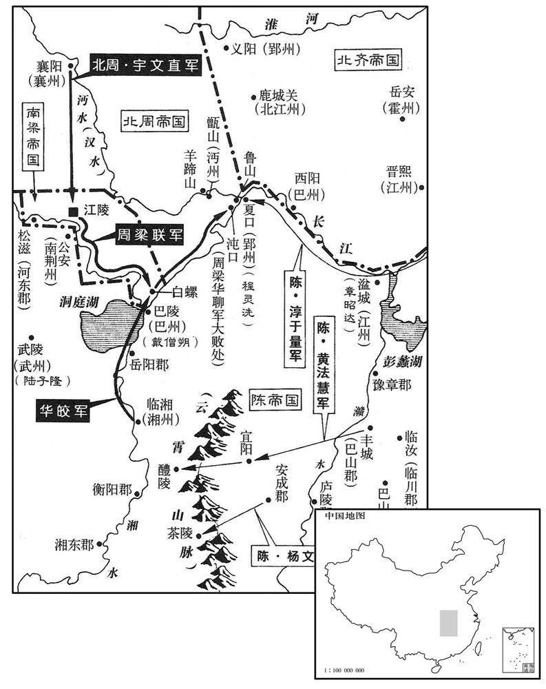
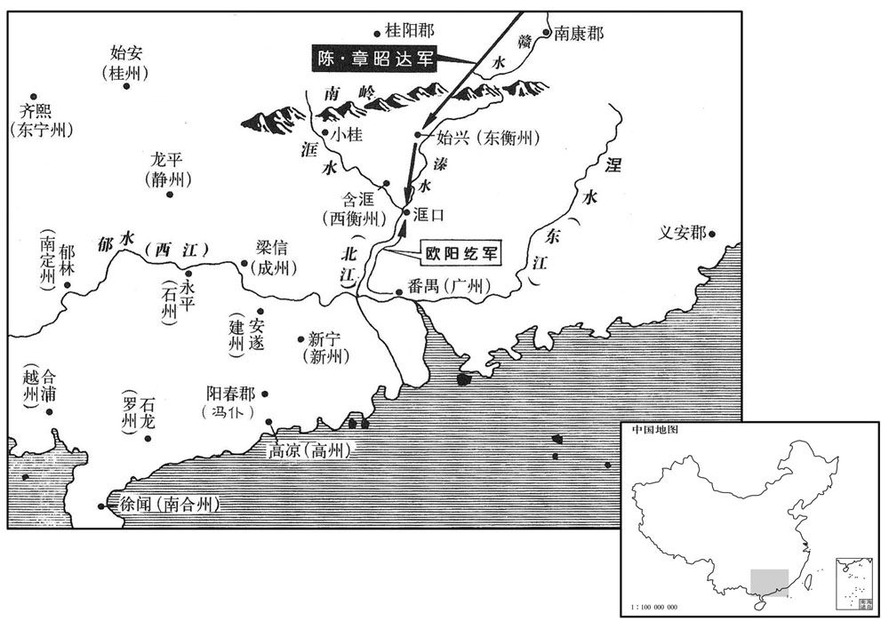
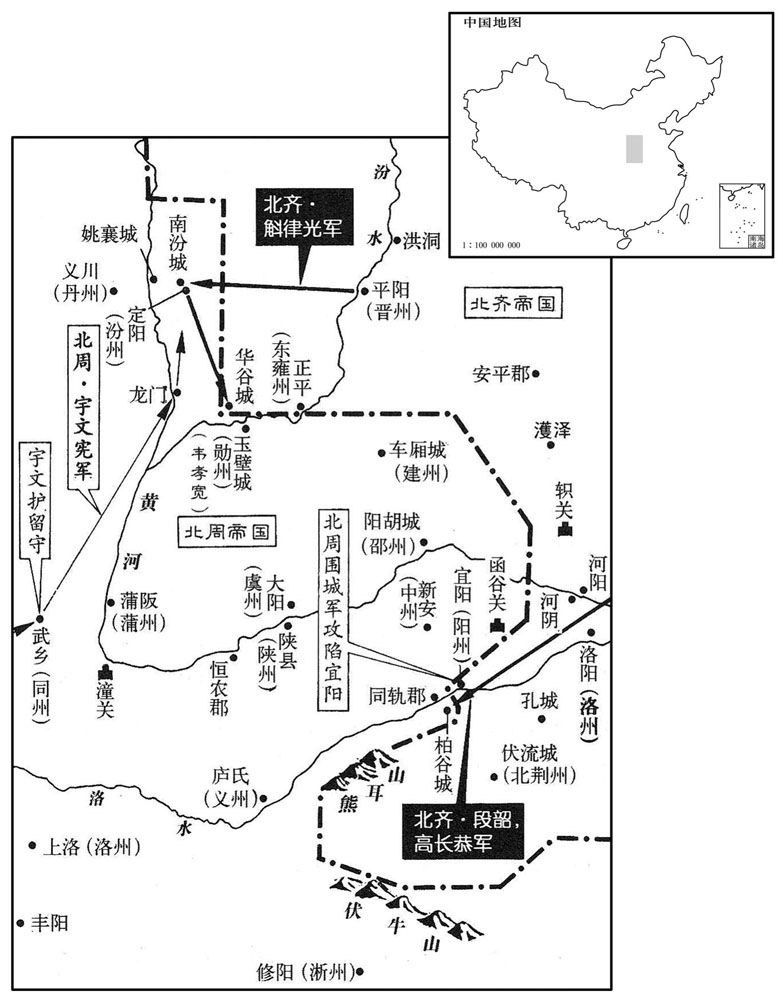

卷次与人物目录 / 卷170
资治通鉴 · 卷第一百七十【陈纪四】
公元567年至公元571年 · 原文、白话与胡三省注
本页按胡注本编排保存全卷内容。白话采用本站所据译本，未可靠对应的内容另列说明；事件标题用于定位，并非原书文字。
本卷共192段原文，187段有译文对应，5段缺译或待核对。
卷第一百七十【陈纪四】起强圉大渊献（丁亥），尽重光单阏（辛卯）凡五年。
卷首原文与注释
临海王〔讳伯宗，字奉业，小字药王，文帝嫡长子也。〕
公元567年 · 陈临海王光大元年
光大元年〔（丁亥、五六七）〕
上传原文的注释括号有异常，字符原样保留；无法可靠划分的段落默认全文显示。
本年事件索引（现代整理）
- 发生日食
- 陈朝尚书左仆射袁枢去世
- 陈朝大赦并改元光大
- 陈废帝祭祀南郊
- 北齐太上皇返回邺城
- 周主亲耕藉田
- 高纬加元服并大赦
- 刘师知、王暹等密谋外放安成王陈顼
- 毛喜劝陈顼勿听殷不佞矫诏出省，吴明彻也劝其留京辅政
- 陈顼囚禁刘师知并迫使其自尽，朝政尽归陈顼
- 毛喜建议安抚韩子高后再伺机处置
- 陈顼拘捕到仲举、韩子高等人并赐死
- 南豫州刺史余孝顷因谋反被处死
- 陈朝任始兴王陈伯茂为中卫大将军、开府仪同三司
- 陈朝任沈钦为侍中、左仆射
- 北齐派司马幼之出使陈朝
- 华皎听闻韩子高被处死后不安，秘密引周军并依附后梁
- 陈顼任吴明彻为尚书令
- 北齐任东平王高俨为尚书令
- 陈顼命吴明彻等率军进攻郢州、湘州
- 周武帝尊母亲叱奴氏为皇太后
- 北齐封皇弟仁机、仁约等为诸王
- 北周决定出兵援助华皎，崔猷反对无果
- 北齐左丞相斛律金去世，家族因功勋显赫而备受尊宠
- 北齐任高俨录尚书事、赵彦深为尚书令
- 陈朝立皇子至泽为太子
- 北齐任高湝为太师、段韶为左丞相等
- 高俨深受高湛、胡太后宠爱，出行仪仗比照旧制
- 高俨在含光殿处理政务，高湛一度考虑废立
- 华皎派人劝诱章昭达，被章昭达擒送建康
- 后梁任华皎为司空，派王操率军援助
- 华皎与北周、后梁联军在沌口被吴明彻等击败
- 元定孤军被徐度诱降并俘获，后愤恨而死
- 华皎余党曹庆等四十余人被处死
- 吴明彻乘胜攻下后梁河东郡
- 北周卫公宇文直将湘州失利归咎殷亮，殷亮被杀
- 程灵洗攻陷北周沔州，俘获守将裴宽
- 高湛前往晋阳，山东发生水灾
- 陈废帝祭祀太庙
- 发生日食
- 北齐大赦天下
- 北周许穆公宇文贵从突厥返回，途中病逝
- 高湛返回邺城
- 宇文护母亲去世，周武帝命他继续处理政务
- 祖珽向高湛告发杨愔等人后被严刑拷打并流放
- 毕义云治政残酷，被盗贼杀死，儿子也遭处死

本年形势与背景参考图
春，正月，癸酉朔，日有食之。
春季，正月，癸酉朔（初一），出现日食。
尚书左仆射袁枢卒。〔卒，子恤翻。〕
陈朝尚书左仆射袁枢去世。
乙亥，大赦，改元。〔改元光大。〕
乙亥（初三），陈朝大赦天下，改年号为光大。
辛卯，帝祀南郊。
辛卯（十九日），陈废帝到南郊祭祀。
壬辰，齐上皇还邺。〔去年八月如晋阳，今还。〕
壬辰（二十日），北齐太上皇回邺城。
己亥，周主耕藉田。〔藉，秦昔翻。〕
己亥（二十七日），北周国主在藉田举行耕种仪式。
二月，壬寅朔，齐主加元服，大赦。
二月，壬寅朔（初一），北齐国主举行加冠的仪式，大赦全国。
初，高祖为梁相，〔高祖杀王僧辩，立梁敬帝，遂相之，因以受禅。相，息亮翻；下同。〕用刘师知为中书舍人。师知涉学工文，练习仪体，〔仪体，谓朝仪国体。〕历世祖朝，虽位宦不迁，而委任甚重，〔朝，直遥翻；下同。〕与扬州刺史安成王顼、尚书仆射到仲举同受遗诏辅政。师知、仲举恒居禁中，参决众事，〔恒，户登翻。〕顼与左右三百人入居尚书省。师知见顼地望权势为朝野所属，心忌之，〔属，之欲翻。〕与尚书左丞王；暹等谋出顼于外。〔暹，思廉翻。〕众犹豫，未敢先发。东宫通事舍人殷不佞，素以名节自任，〔按萧子显齐志，东宫职僚，未有通事舍人。五代志，梁东宫有通事守舍人、典事守舍人、典法守舍人员，陈因之。〕又受委东宫，〔言在东宫，为上所亲委。〕乃驰诣相府，〔是时以尚书省为相府。〕矫敕谓顼曰：「今四方无事，王可还东府经理州务。」〔州务，谓扬州事务。〕
当初，陈武帝是梁敬帝的丞相，任用刘师知为中书舍人。刘师知学识广博擅长文学，熟悉朝仪礼制，在梁世祖时，虽然为官得不到升迁，但委任他的事情很重要，他和扬州刺史安成王陈顼、尚书仆射到仲举一起受先皇的遗诏辅政。刘师知、到仲举常常住在宫里，参预决定许多事情。陈顼和三百名身边亲信进驻尚书省，刘师知看到陈顼的门第和权势为朝廷和民间所注目，心中妒嫉，和尚书左丞王暹等策划拟把陈顼排挤出尚书省。大家犹豫不定，不敢率先发难。东宫通事舍人殷不佞，一贯以维护名望气节为己任，加上在东宫任职，是皇帝亲自任命的，于是赶到尚书省假传圣旨对陈顼说：“现在天下无事，安成王可以回自己的东府管理州务。”
顼将出，中记室毛喜〔五代志：梁制：蕃王国及庶姓有持节，府有中录事、中记室。〕驰入见顼曰：「陈有天下日浅，国祸继臻，〔谓八年之间，国连有大丧。〕中外危惧。太后深惟至计，〔惟，思也。〕令王入省共康庶绩，今日之言，必非太后之意。宗壮〔【章：十二本「壮」作「社」；乙十一行本同；孔本同。】〕之重，愿王三思，〔三，息暂翻，又如字。〕须更闻奏，无使奸人得肆其谋。今出外即受制于人，譬如曹爽，愿作富家翁，其可得邪！」〔曹爽事见四十五卷魏邵陵厉公嘉平元年。〕顼止喜与领军将军吴明彻筹之，明彻曰：「嗣君谅闇，〔闇，音阴。〕万机多阙。殿下亲实周、邵，当辅安社稷，愿留中勿疑。」
陈顼正准备离开尚书省，中记室毛喜赶来见他，说：“陈朝据有天下为时还很短，国家接连遇到大丧事，上上下下都感到担忧害怕。太后经过深思熟虑，才决定叫您安成王进尚书省共同兴举各种事功，殷不佞所说的，一定不是太后的意思。社稷的重任在身，希望您能三思，必须另行向朝廷奏报，不要使邪恶之徒的阴谋得逞。现在离开尚书省就会受到别人的牵制束缚，比如像曹爽那样，只愿当个富家翁，这怎能如愿！”陈顼派毛喜和领军将军吴明彻商议，吴明彻说：“继位的国君正在居丧，日常纷繁的政务很多还没有着手。殿下亲如周公、召公，应当辅助皇上安定国家，希望殿下留在尚书省，不必疑虑。”
顼乃称疾，召刘师知，留之与语，使毛喜先入言于太后。太后曰：「今伯宗幼弱，政事并委二郎。〔文帝居长，顼居次，故称为二郎。〕此非我意。」喜又言于帝。帝曰：「此自师知等所为，朕不知也。」喜出，以报顼。顼因囚师知，自入见太后及帝，〔见，贤遍翻。〕极陈师知之罪，仍自草敕请画，〔请画可也。〕可师知府廷尉，其夜，于狱中赐死。以到仲举为金紫光禄大夫。王暹、殷不佞并付治。〔付治，付有司治罪也。或作「付冶」，付东冶使徒作也。以下文不害免官言之，「治」字为是。暹，息廉翻。〕不佞，不害之弟也，少有孝行，〔不佞少居父丧，以至孝称。江陵之陷，不佞母死于乱兵。不佞在吴，道路隔绝，久不得奔赴，四年之中，昼夜号泣，居处饮食，常为居丧之礼。后其兄不齐迎母丧归葬，不佞居处之节，如始闻问，若此者又三年。身自负土，手植松柏，每岁时伏腊，必三日不食。少，诗照翻。行，下孟翻。〕顼雅重之，故独得不死，免官而已。王暹伏诛。自是国政尽归于顼。〔刘师知之事，大类杨愔。〕
陈顼于是假装生病，请刘师知来，留住他进行谈话，同时派毛喜先向太后禀告。太后说：“现在伯宗皇帝年幼，政事都委托给二郎陈顼。殷不佞所说的不是我的意思。”毛喜又去向陈废帝说这件事。陈废帝说：“ 这是刘师知他们自己的所作所为，朕并不知道。”毛喜回来报告给陈顼。陈顼把刘师知囚禁起崐来，亲自进宫见太后和皇帝，极力陈述刘师知的罪行，自己起草了诏命请皇帝御批，把刘师知交给廷尉，这天夜里，在牢狱中把他赐死。任命到仲举为金紫光禄大夫。王暹、殷不佞一同交送有关部门治罪。殷不佞是殷不害的弟弟，少年时对父母很孝顺，陈顼平素很看重他，所以唯独他没有被处死，只是被罢官而已。王暹被处死。从此以后国家大政都归于陈顼。
右卫将军会稽韩子高，镇领军府，在建康，诸将中士马最盛，〔会，工外翻。将，即亮翻。〕与仲举通谋。事未发。毛喜请简士马配子高，并赐铁炭，使修器甲。顼惊曰：「子高谋反，方欲收执，何为更如是邪﹖」〔邪，音耶。〕喜曰：「山陵始毕，边寇尚多，而子高受委前朝，名为杖顺。若收之，恐不即授首，或能为人患。宜推心安诱，〔朝，直遥翻。诱，音酉。〕使不自疑，伺间图之，一壮士之力耳。」顼深然之。〔间，古苋翻。考异曰：陈书文沈后传云：「安成王既专，沈太后忧闷，计无所出，乃密赂宦者蒋裕，令诱诱建安人张安国，使据郡反，冀因此以图高宗。安国事觉，并为高宗所诛。时后左右近侍颇知其事，后恐连，逮党与并杀之。」按后欲图高宗，而令安国据建安反，理不相涉。且后若实有此谋，高宗既立，后岂得自全！今删去。〕
右卫将军会稽人韩子高，镇守幕府，在建康的诸多将帅中，部下的兵马最为强盛，曾经和到仲举联系共谋。这件事没有揭露。毛喜请陈顼选派士兵马匹给韩子高，并赐给他铁和木炭，供他修治兵器盔甲。陈顼感到惊讶说：“韩子高参预谋反，正要把他抓起来，为什么反倒这样？”毛喜说：“先帝的山陵刚修建完毕，边境的盗寇还很多，韩子高受前朝的委用，号称凭倚之材。如果抓他，恐怕不能斩杀，或许变成祸患。应当对他推心置腹安抚诱导，使他不产生怀疑，等到有机会再对付他，只要一个壮士的力量就够了。”陈顼非常同意。
仲举既废归私第，心不自安。子郁，尚世祖妹信义长公主，〔信义，郡名。五代志：吴郡常熟县，梁置信义郡。长，知两翻。〕除南康内史，未之官。子高亦自危，求出为衡、广诸镇；郁每乘小舆，蒙妇人衣，与子高谋。会前上虞令陆昉及子高军主告其谋反。〔昉，分罔翻。〕顼在尚书省，因召文武在位议立皇太子。平旦，仲举、子高入省，皆执之，〔到仲举既废归私第，非在位者。盖顼召其会议，因而执之。〕并郁送廷尉，下诏，于狱赐死，〔考异曰：陈书子高传，死在光大元年八月。按华皎传，子高诛后，皎始谋叛。帝纪，此年五月，皎已谋反。又慈训太后令，先言刘师知、子高诛，后乃及余孝顷。始兴王伯茂传，师知等诛后，伯茂乃进号中卫。然则子高传误。〕余党一无所问。
到仲举被免职后回到住所，心里很不平静。他的儿子到郁，娶文帝的妹妹信义长公主为妻，授南康内史的官职，他没有赴任。韩子高自己也感到有危险，请求离京镇守衡、广等州；到郁往往坐小轿，蒙上妇女的衣服，到韩子高那里去策划。恰巧前上虞令陆和韩子高军队的主将检举到郁谋反。陈顼在尚书省，召集在位的文武大臣们商议立皇太子的事。清晨，到仲举、韩子高到尚书省，都被抓起来，连同到郁一并押送廷尉，诏令在狱中赐死，他们的余党一个也不追问。
辛亥，南豫州刺史余孝顷坐谋反诛。
辛亥（初十），陈朝南豫州刺史余孝顷以谋反罪被杀。
癸丑，以东扬州刺史始兴；王伯茂为中卫大将军、开府仪同三司。〕梁置四中将军，军、卫、抚、护，止施于内。〕伯茂，帝之母弟也，刘师知、韩子高之谋，伯茂皆预之；司徒顼恐扇动内外，故以为中卫，专使之居禁中，与帝游处。〔处，昌吕翻。〕
癸丑（十二日），陈朝任命东扬州刺史始兴王陈伯茂为中卫大将军、开府仪同三司。陈伯茂是废帝的同母兄弟，刘师知、韩子高的阴谋，陈伯茂都曾参预；司徒陈顼恐怕陈伯茂在朝内外煽惑，所以叫他任中卫，专门住在宫里，陪伴废帝出游居住。
三月，甲午，以尚书右仆射沈钦为侍中、左仆射。〔史言沈钦官兼两省。〕
三月，甲午（二十三日），陈朝任命尚书右仆射沈钦为侍中、左仆射。
夏，四月，癸丑，齐遣散骑常侍司马幼之来聘。〔散，悉亶翻。骑，奇寄翻。〕
夏季，四月，癸丑（十三日），北齐派散骑常侍司马幼之到陈朝聘问。
湘州刺史华皎〔华，户化翻。〕闻韩子高死，内不自安，〔皎与刘师知、韩子高皆为文武所亲任，二人既死，故皎不自安。〕缮甲聚徒，抚循所部，启求广州，以卜朝廷之意。司徒顼伪许之，而诏书未出。皎遣使潜引周兵，又自归于梁，以其子玄响为质。〔使，疏吏翻。质，音致。〕
陈朝的湘州刺史华皎听说韩子高被处死，内心忐忑不安，便修造盔甲聚集徒众，安抚部下，上奏要求担任广州刺史，以窥测朝廷的意思。司徒陈顼假意答允，而没有下诏书。华皎派使者暗中引来北周军队，自己又投奔后梁，以自己的儿子华玄响作为人质。
五月，癸巳，顼以丹杨尹吴明彻为尚书令。
两版字句有差异，建议核对原文。
五月，癸巳（二十三日），陈顼任命丹杨尹吴明彻为湘州刺史。
甲午，齐以东平王俨为尚书令。
甲午（二十四日），北齐任命东平王高俨为尚书令。
司徒顼遣吴明彻帅舟师三万趣郢州，〔帅，读曰率；下同。趣，七喻反；下同。〕丙申，遣征南大将军淳于量帅舟师五万继之，又遣冠武将军杨文通从安成步道出茶陵，〔梁置冠武将军，与折冲同班。五代志：庐陵郡安复县，旧置安成郡。茶陵县，汉属长沙郡，吴分属湘东郡，隋并入衡山郡湘潭县。九域志：茶陵县属衡州，在州东三百五十五里。〕巴山太守黄法慧从宜阳出澧陵，〔宜阳，即豫章郡宜春县也，晋孝武帝更名宜阳，避太后讳也。隋复曰宜春县，带袁州。后汉立醴陵县，属长沙郡。九域志：在郡东一百六十里。自宜春至醴陵二百二十里。守，式又翻。〕共袭华皎，并与江州刺史章昭达、郢州刺史程灵洗合谋进讨。六月，壬寅，以司空徐度为车骑将军，总督建康诸军，步道趣湘州。
司徒陈顼派吴明彻率领三万水军进取郢州，丙申（二十五日），派征南大将军淳于量率领五万水军相继跟进，又派冠武将军杨文通从安成陆路向茶陵进兵，巴山太守黄法慧从宜阳进兵澧陵，共同攻袭华皎，并和江州刺史章昭达、郢州刺史程灵洗合谋进讨。六月，壬寅（初三），任命司空徐度为车骑将军，总督建康的军队，从陆路进兵湘州。
辛亥，周主尊其母叱奴氏为皇太后。〔按魏收官氏志：拓跋兴于代北，兼并他部，以本部中别族为内姓；其它诸部随方分之，北方有叱奴氏。〕
辛亥（十二日），北周国主向母亲叱奴氏上皇太后尊号。
己未，齐封皇弟仁机为西河王，仁约为乐浪王，〔乐，音洛；下同。浪，音琅。〕仁俭为颍川王，仁雅为安乐王，仁直为丹杨王，〔考异曰：北齐书帝纪：名统，今从列，传。统，谓仁直。〕仁谦为东海王。〔皆郡，王也。五代志：安乐郡密云县，茌置安乐郡。
两版字句有差异，建议核对原文。
己未（二十日），北齐封皇弟高仁机为西河王，高仁约为乐浪王，高仁俭为颍川王，高仁雅为安乐王，高仁直为丹杨王，高仁谦为东海王。
华皎使者至长安；梁亦上书言戕，且乞师；〔华，户化翻。使，疏吏翻。上，时掌翻。〕周人议出师应之。司会崔猷曰：「前岁东征，死伤过半。〔谓攻齐洛阳也，事见上卷文帝天嘉五年。会，古外翻。〕比虽循抚，疮痍未复。今陈氏保境息民，共敦邻好，〔比，毗至翻。好，呼到翻。〕岂可利其土地，纳其叛臣，违盟约之信，兴无名之师乎！」晋公护不从。闰六月，戊寅，遣襄州总管卫公直督柱国陆通、大将军田弘、权景宣、元定等将兵助之。〔将，即亮翻，又音如字，领也。〕
华皎的使者到长安；梁王也上书说明情况，请求北周派军队支援；周朝人商议准备派军队答允对方请求。司会崔猷说：“前年东征洛阳，军队死伤过半。近来虽然加以安抚，但遭受的创伤还没有平复。现在陈朝保境安民，和我们睦邻友好，怎么能贪图它的土地，接纳他们的叛臣，违背和对方盟约的信义，出动无名之师？”晋公宇文护不接受意见。闰六月，戊寅（二十一日），派襄州总管卫公直督领柱国陆通、大将军田弘、权景宣、元定等率领军队去帮助华皎。
辛巳，齐左丞相咸阳武王斛律金卒，年八十。长子光为大将军，〔相，息亮翻。卒，子恤翻。长，知两翻。〕次子羡及孙武都并开府仪同三司，出镇方岳，〔斛律羡镇幽州，武都镇梁、兖二州。〕其余子孙封侯显贵者甚众。门中一皇后，二太子妃，〔金子光长女，孝昭纳为太子妃；次女，武成纳为太子妃，后主受内禅，立为皇后。〕三公主，〔按后祖珽言光男尚公主，盖光子武都、世雄、恒伽皆尚主也。〕事齐贵宠，三世无比。自肃宗以，礼敬尤重，每朝见，常听乘步挽车至阶，〔朝，直遥翻。见，贤遍翻。步挽车，不用牛马，令人步挽之。〕或以羊车迎之。然金不以为喜，尝谓光曰：「我虽不读书，闻古来外戚鲜有能保其族者。〔鲜，息浅翻。〕女若有宠，为诸贵所嫉；无宠，为天子所憎。我家直以勋劳致富，何必藉女宠也！」〔史言斛律金有识。〕
辛巳（二十四日），北齐左丞相咸阳武王斛律金死去，终年八十岁。他的长子斛律光为大将军，次子斛律羡和孙子斛律武都封开府仪同三司，出任州的地方长官，其他子孙被封侯而显贵的很多。斛律氏的门第中出了一个皇后，两个太子妃，娶了三个公主，服事北齐受到恩宠，三代无比。自孝昭帝以来，特别礼待尊敬，每当上朝拜见天子，常常准许乘用人推的车辆到宫殿的台阶前，或用羊拉的车去迎接他上朝。然而斛律金并不为这种待遇而感到高兴，曾经对斛律光说：“我虽然不读书，但听到从古以来帝王的母族、妻族很少有能够保护自己亲族的。女的如果得到皇帝的宠爱，就会受到公侯权贵们的妒嫉；如果不得宠爱，就会被天子憎恨。我家一直以功勋劳绩而得到富贵，何必依靠女儿受到皇帝的恩宠！”
壬午，齐以东平王俨录尚书事，以左仆射赵彦深为尚书令，并省尚书左仆射娄定远为左仆射，〔自并省入为邺省左仆射。〕中书监徐之才为右仆射。定远，昭之子也。〔昭，娄后之弟。〕
壬午（二十五日），北齐任命东平王高俨为录尚书事，左仆射赵彦深为尚书令，并省尚书左仆射娄定远为左仆射，中书监徐之才为右仆射。娄定远是娄昭的儿子。
秋，七月，戊申，立皇子至泽为太子。
秋季，七月，戊申（二十二日），陈朝立皇子陈至泽为太子。
八月，齐以任城王湝为太师，〔任，音壬。湝，音皆，又户皆翻。〕冯翊王润为大司马，段韶为左丞相，贺拔仁为右丞相，侯莫陈相为太宰，娄叡为太傅，斛律光为太保，韩祖念为大将军，赵郡王叡为太尉，东平王俨为司徒。
八月，北齐任命任城王高为太师，冯翊王高润为大司马，段韶为左丞相 ，贺拔仁为右丞相，侯莫陈相为太宰，娄睿为太傅，斛律光为太保，韩祖念为大将军，赵郡王高睿为太尉，东平王高俨为司徒。
俨有宠于上皇及胡后，时兼京畿大都督、领军大将军，领御史中丞。魏朝故事：中丞，出与皇太子分路，〔分路而行，不引车避道。朝，直遥翻。〕，王公皆遥驻车，去牛，顿轭于地，以待其过；〔去，羌吕翻。轭于革翻。〕其或迟违，〔不即驻车顿轭，是迟，迟为违法。〕则前驱以赤棒棒之。〔棒，部项翻。〕自迁邺以后，此仪废绝，上皇欲尊宠俨，命一遵旧制。俨初从北宫出，将上中丞，〔将上，时掌翻。今人谓领职视事为礼上。〕凡京畿步骑、领军官属、中丞威仪、司徒卤簿，莫不毕从。〔骑，奇寄翻。从，才用翻。〕上皇与胡后张幕于华林园东门外而观之，遣中使骤马趣仗。〔趣俨前导仪仗也。使，疏吏翻。趣，七喻翻。〕不得入，自言奉敕，赤棒卒应声碎其鞍，马惊，人坠。上皇大笑，以为善，更敕驻车，劳问良久。〔劳问俨也。劳，力到翻。〕观者倾邺城。
高俨受到太上皇和胡后的恩宠，当时兼任京畿大都督、领军大将军，领御史中丞。魏朝旧时的制度是：中丞外出时，和皇太子分路而行，王公们离他们很远时就要停车，把驾车的牛牵走，把车轭放在地上，等待他们通过；如果行动稍有迟缓就是违法，开道的前驱就用红色的棍棒打驱逐。自从迁都到邺城以后，这种仪式已经废除，太上皇为了表示对高俨的尊重宠爱，下令恢复这种制度。高俨刚离开北宫，就职中丞，凡是京畿的步骑、领军的属官、中丞和司徒的仪仗随从，都全部出动，太上皇帝和胡后在华林园东门外设置帷幕观看，派遣使者骑马疾驰到高俨的仪仗队那里。使者不得进入，自称是奉皇帝的命令而来的，手持红色棍棒的兵士应声打碎使者的马鞍，马受到惊吓，把使者颠下来。太上皇大笑，以为很好，还下令高俨停车。对他慰问了很久。全邺城的人都出来观看。
俨恒在宫中，坐含光殿视事，〔恒，户登翻；下同。〕诸父皆拜之。上皇或时如并州，〔晋阳宫在并州。〕俨恒居守。〔恒，户登翻。守，式又翻。〕每送行，或半路，或至晋阳乃还。〔还，从宣翻，又音如字。〕器玩服饰，皆与齐主同，所须悉官给。尝于南宫见新冰早李，〔齐主时居邺之南宫，俨从上皇、胡后居北宫。〕还，怒曰：「尊兄已，有我何意无！」〔俨常谓齐主为尊兄。〕自是齐主或先得新奇，属官及工人必获罪。俨性刚决，尝言于上皇曰：「尊兄懦，何能帅左右！」上皇每称其才，有废立意，胡后亦劝之，既而中止。〔俨与齐主既定君臣之分，而常以兄弟相呼，又有夺嫡之意。史历言之，为俨怙宠致祸张本。帅，读曰率。〕
高俨常在宫里，坐在含光殿办理政事，同宗族长辈都向他下拜表示尊敬。太上皇有时去并州，高俨便常常在宫中留守。给太上皇送行时，或送到半路，或送到晋阳才回宫。他的用具服饰，都和北齐国主的一般，需用的东西都由官府供给。曾经在北齐国主所住的南宫见到刚送来的冰镇的李子，回去后，勃然大怒说：“我的哥哥有这个，我为什么却没有！”从此以后北齐国主比他先得到新奇的东西，属官和工匠一定会获罪。高俨性情刚愎果断，曾对太上皇说：“哥哥懦弱，怎么能统率左右！”太上皇往往称赞他的才能，有废高纬立高俨的意思，胡后也劝他这样做，但不久就中止了这个想法。
华皎遣使诱章昭达，昭达执送建康。又诱程灵洗，灵洗斩之。〔华，户化翻。使，疏翻。诱，音酉；下并同。〕皎以武州居其心腹，〔五代志：武陵郡，梁置武州。〕遣使诱都督子隆，子隆不从；遣兵攻之，不克。巴州刺史戴僧朔等并隶于皎，〔文帝命皎都督湘、巴等四州。五代志，巴陵郡，梁置巴州。〕长沙太守曹庆等，本隶皎下，遂为之用。〔湘州与长沙郡同治所，以州统郡，故曰本隶皎下。守，手又翻。〕司徒顼恐上流守宰皆附之，乃曲赦湘、巴二州。九月，乙巳，悉诛皎家属。
华皎派使者去劝诱章昭达，被章昭达捉住送到建康。又派使者去劝诱程灵洗，被程灵洗杀死。华皎因为武州是他的心腹要地，派使者去劝诱武州都督陆子隆，陆子隆不肯听从；华皎派军队去进攻，也没有攻克。巴州刺史戴僧朔等都隶属华皎，长沙太守曹庆等人，原先也隶属华皎，因此都为华皎效命。司徒陈顼担心上游一带的郡守地方官都归附华皎，便特别赦免了湘、巴二州。九月，乙巳（初七），把华皎的家属全部处死。
梁以皎为司空，遣其柱国王操将兵二万助之。周权景宣将水军，元定将陆军，卫公直总之，与皎俱下。〔将，即亮翻，又音奴字，领也。〕淳于量军夏口，直军鲁山，使元定以步骑数千围郢州。〔骑，奇寄翻。考异曰：陈帝纪云「步骑二万」，盖夸诞之辞。今从周帝纪。〕皎军于白螺，〔水经：江水过长沙下隽县北，湘水从南来注之。江水又东过彭城口，又东过如山北，又东过白螺山南。螺，卢戈翻。隽，辞兖翻。〕与吴明彻等相持。徐度、杨文通由岭路袭湘州，〔岭路，即前所出安成、宜阳步道也。〕尽获其所留军士家属。
后梁任命华皎为司空，派柱国王操领兵二万去援助他。北周权景宣率领水军，元定率领陆军，由卫公宇文直总辖，和华皎的军队一起顺流而下，淳于量驻军夏口，宇文直驻军鲁山，元定以几千名步、骑兵包围郢州。华皎在白螺驻军，和吴明彻的陈朝军队互相钳制。陈朝的徐度、杨文通从陆路奔袭湘州，把华皎留在湘州的军士家属全部俘虏。
皎自巴陵与周、梁水军顺流簌风而下，军势甚盛，战于沌口。〔沌，柱兖翻。〕量、明彻募军中小舰，多赏金银，令先出当西军大舰受其拍；西军诸舰发拍皆尽，然后量等以大舰拍之，西转，自焚，西军大败。皎与戴僧朔单舸走，〔舸，古我翻。〕过巴陵，不敢发岸，〔「发」，恐当作「登」。〕径奔江陵；卫公直亦奔江陵。
两版字句有差异，建议核对原文。
华皎从巴陵与北周、后梁的水军顺流乘风西下，军势很强盛，在沌口和陈崐朝军队发生战斗。淳于量、吴明彻募集了军队中的小船，赏给许多金银，命令先行出发承受北周、后梁水军大船上“拍竿”的攻击；等对方船上“拍竿”发射的石块，淳于量等便用大船上的“拍竿”向对方进攻，北周、后梁的大船都被“拍竿”击破，沉没在沌口中游。北周、后梁的军队又用船装载了乾柴，借风力纵火引向对方，不久风向转变，火烧到自己，北周、后梁的军队大败。华皎和戴僧朔乘一只船逃走，路过巴陵，不敢靠岸，直奔江陵，卫公宇文直也奔向江陵。
元定孤军，进退无路斫竹开径，且战且引，欲趣巴陵。〔趣，七喻翻。〕巴陵已为徐度等所据，度等遣使伪与结盟，许纵之还国；定信之，解仗就度，度执之，尽俘其众，〔考异曰：陈书云「获万余人，马四千匹」。亦恐夸诞，今不取。〕并擒梁大将军李广。定愤恚而卒。〔恚，于避翻。卒，子恤翻。〕
元定的孤军，进退无路，砍断竹子开出道路，且战且退，想退到巴陵。这时巴陵已经被徐度等所占领，徐度等派使者假装愿意和他结盟，答允放他回北周；元定相信了，解除了武装归顺徐度，徐度捉住他，并俘虏了元定的全部军队，还擒获了后梁的大将军李广。元定愤怒而死。
皎党曹庆等四十余人并伏诛。唯以岳阳太守章昭裕，昭达之弟，桂阳太守曹宣，高祖旧臣，衡阳内史汝阴任忠，尝有密启，皆宥之。
华皎的余党曹庆等四十多人都被杀。只有岳阳太守章昭裕因为是章昭达的弟弟，桂阳太守曹宣是陈朝高祖时的老臣，衡阳内史汝阴任忠曾经向朝廷上过密启 ，这三人被宽恕免罪。
吴明彻乘胜攻梁河东，拔庂。〔守，式又翻。五代志：巴陵郡湘阴县，梁置岳阳郡。桂阳郡郴县，梁置桂阳郡。长沙郡衡山县，旧置衡阳郡。陈以衡阳为王国，故置内史。南郡松滋县，旧置河东郡。任，音壬。〕
吴明彻乘胜攻克后梁的河东郡。
周卫公直归罪于梁柱国殷亮；梁主知非其罪，然不敢违，遂诛之。
北周卫公宇文直把失败归罪于后梁的柱国殷亮；后梁明帝虽然明白不是殷亮的罪过，因为不敢违抗宇文直的意志，便把他杀死。
周与陈既交恶，周沔州刺史裴宽白襄州总管，请益戍兵，并迁城于羊蹄山以避水。〔五代志：沔阳郡甑山县，梁置梁安郡西魏改曰魏安郡，置江州，废帝三年，改曰沔州。甑山有阳台山，在汉川之南三十五里，土俗讹为羊蹄山。〕总管兵未至，程灵洗舟师奄至城下。会大两，水暴涨，灵洗引大舰临城城发拍，击楼堞皆碎，〔堞，徒协翻。〕矢石昼夜攻之三十余日；陈人登城，宽犹帅众执短兵拒战；〔帅，读曰率。〕又二日，乃擒之。
北周和陈朝既关系破裂，互相仇视，北周的沔州刺史裴宽向襄州总管报告，请求增加卫戍的军队，并把城池迁到羊蹄山以远离水边。襄州总管的援军还没到，程灵洗的水军船队已经来到城下。正遇天降大雨，河水猛涨，程灵洗把大船驶到城边用“拍竿”发起攻击，把城上的矮墙都打碎了，又用箭和石块攻打了三十多天；陈朝军队登上城墙，裴宽还率领军队用短兵器抵抗；过了两天，裴宽被擒。
丁巳，齐上皇如晋阳。山东水，饥，〔按李百药书：山东大水，人饥。〕僵尸汉道。〔僵，居良翻。〕
丁巳（十九日），北齐太上皇帝去晋阳。山东发生水灾、饥荒，道路上都是尸体。
冬，十月，甲申，帝享太庙。
冬季，十月，甲申（十七日），陈废帝到太庙祭祀祖宗。
十一月，戊戌朔，日有食之。
十一月，戊戌朔（初一），出现日食。
丙午，齐大赦。
丙午（初九），北齐大赦全国。
癸丑，周敨穆公宇文贵自突厥还，卒于张掖。〔宇文贵与陈公纯等如突厥逆女，突厥留之；贵以疾先得还。厥，九勿翻。还，从宣翻，又音如字。卒，子恤翻。掖，音亦。〕
癸丑（十六日），北周许穆公宇文贵从突厥回朝，中途死在张掖。
齐上皇还邺。
北齐太上皇回邺城。
十廾月，周晋公护母卒，〔卒，子恤翻。〕诏起，令视事。〔令，力丁翻。〕
十二月，北周晋公宇文护的母亲死去，周武帝下诏让他不必守丧，叫他就职治事。
齐秘书监祖珽，与黄门侍郎刘逖友善。珽欲求宰相，乃疏赵彦深、元文遥、和士开罪状，令逖奏之，逖不敢通；彦深等闻之，先诣上皇自陈。上皇大怒，执珽，诘之，〔珽，伳鼎翻。诘，去吉翻。〕珽因陈士开、文遥、彦深等朋党、弄权、卖官、鬻狱事。上皇曰：「尔乃诽谤我！」珽曰：「臣不敢诽谤陛下取人女。」上皇曰：「我以其饥馑，收养之耳。」珽曰：「何不开仓振给，乃买人后宫乎﹖」上皇益怒，以刀环筑其口，鞭杖乱下，将扑杀之。〔扑，弼角翻。〕珽呼曰：「陛下勿杀臣，臣为陛下合金丹。」〔呼，火故翻。为，于伪翻。合，音合。〕遂得少宽。〔少，诗照翻。〕班曰：「陛曰：「项羽布衣，帅乌合之众，五年而成霸业。〔帅，读曰率。〕陛下藉父兄之资，纔得至此，臣以为项坊，寻徙光州，〔五代志：东莱郡，旧置光州。〕敕令牢掌。别驾张奉福曰：「牢者，地牢也。」乃置地牢中，桎梏不离身；〔离，力智翻。〕夜，以芜菁子为烛，眼为所熏，由是失明。〔苯草曰：芜菁主明目。今珽由是失明，盖其子饵之钊明目，以之为烛，则烟熏眼而失明。衍义曰：芜菁，今世俗谓之蔓菁，夏则枯，蔬圃复种之，谓之鸡毛菜。正在春时采撷之余，收子为油。审是，则菜油也，东南之人多之照夜，未尝熏眼失明。〕
两版字句有差异，建议核对原文。
北齐秘书监祖，和黄门侍郎刘逖关系很好。祖想做宰相，便上疏陈述赵彦深、元文遥、和士开的罪状，叫刘逖向太上皇奏报，刘逖不敢启奏；赵彦深等人听到后，自己先到太上皇那里申述情况。太上皇勃然大怒，把祖抓来，亲自审问，祖说出和士开、元文遥、赵彦深等人拉帮结党、玩弄权术、出卖官职、办狱受贿的事实。太上皇说：“你是在诽谤我！”祖说：“臣不敢诽谤，因为陛下娶了人家的女儿。”太上皇说：“我因为她们遭受灾荒饥馑，所以才收养她们。”祖说：“那为什么不开粮仓赈济粮食，反把她们买到后宫？”太上皇更加恼怒，用刀把的铁环凿他的嘴，用鞭子棍子乱打，要把他打死。祖大叫说：“陛下不要杀臣，臣能给陛下炼金丹。”这才稍为缓和。祖说：“陛下有一个象范增那样的人却不能用他。”太上皇又大怒说：“你把自己比作范增，把我比作项羽吗？”祖说：“项羽出身布衣，率领乌合之众，用五年时间而成就霸业。陛下靠了父兄的地位、声望，才有今天，臣以为不能轻视项羽。”太上皇愈加震怒，叫人用土塞在他嘴里。祖边吐边说，被鞭打二百，发配甲坊做工，不久又把他迁到光州，命令他做“牢掌”。别驾张奉福说：“牢，就是地牢。”便把他囚在地牢里，戴上手铐脚镣；晚上点燃蔓菁子油代替蜡烛，眼睛被烟火所熏，从此失明。
齐七兵尚书毕义云，〔杜佑曰：魏始置本兵尚书，谓中兵、外兵、别兵、都兵、骑兵也。晋分中、外各为左、右，虽与旧为七曹，唯有五兵尚书，无七兵尚书之名。至后魏，始有七兵尚书。今诸家著述，或谓晋太康中置七兵尚书，误矣。〕为治酷忍，非人理所及，〔治，直吏翻。〕于家尤甚。夜，为盗所杀，遗其刀，騇之，其子善昭所佩刀也。有司执善昭，诛之。〔史书此以垂戒。然以情观之，善昭果弒其父，必不遗刀以待验，盖盗为此计以杀其子。〕
北齐七兵尚书毕义云，治下非常残酷，超乎人理，对家人更是如此。夜晚，被人杀死，现场留下刀子，经过查证，是他儿子毕善昭的佩刀。官府逮捕了毕善昭，将他处死。
公元568年 · 陈临海王光大二年
二年〔（成子、五六八）〕
上传原文的注释括号有异常，字符原样保留；无法可靠划分的段落默认全文显示。
本年事件索引（现代整理）
- 陈顼进位太傅并兼领司徒
- 周武帝祭祀南郊
- 北齐派郑大护出使陈朝
- 陈朝湘东忠肃公徐度去世
- 周武帝前往武功
- 突厥木杆可汗反复议和，最终送女儿嫁给周武帝
- 北齐任高俨为大将军、高绰为司徒等
- 北周燕文公于谨去世
- 吴明彻攻打江陵，梁主出城避战后守军击退陈军
- 北周任达奚武为太傅、尉迟迥为太保
- 高湛前往晋阳
- 徐之才治好高湛后，被和士开排挤出朝
- 周武帝祭太庙后前往醴泉宫
- 高湛从晋阳返回邺城
- 北周随桓公杨忠去世，子杨坚袭爵
- 周武帝返回长安
- 陈废帝封弟弟伯智、伯谋为王
- 北齐向北周求和，双方互派使者
- 周武帝祭祀太庙
- 陈废帝祭祀太庙
- 北齐任高孝珩录尚书事等，随后发生日食
- 北齐派李谐出使陈朝
- 周武帝前往岐阳
- 北周派崔彦等出使北齐
- 陈废帝被废为临海王，始兴王陈伯茂随后遭陈顼杀害
- 高湛病重，临终将后事托付给和士开
- 和士开秘不发丧，冯子琮劝其尽快公布消息
- 北齐大赦天下，尊太上皇后为皇太后
- 元文遥与赵叡等人谋划将冯子琮外放
- 北齐下诏停止百工细作并释放年老病弱宫人
- 赵文表以分化劝降策略平定北周恒棱獠人叛乱
春，正月，己亥，安成王顼进位太傅，领司徒，加殊礼。
春季，正月，己亥（初三），安成王陈顼进位太傅，领司徒，加特殊的礼遇。
辛丑，周主祀南郊。
辛丑（初五），北周国主到南郊祭祀。
癸亥，齐主使兼散骑常侍郑大护来聘。
癸亥（二十七日），北齐国主派兼散骑常侍郑大护来陈朝聘问。
湘东忠肃公徐度卒。〔卒，子恤翻。〕
陈朝的湘东忠肃公徐度死。
二月，丁卯，周主如武功。
二月，丁卯（初二），北周国主去武功。
突厥木杆可汗贰于周，〔厥，九勿翻。杆，公旦翻。可，从刊入声。汗，音寒。〕更许齐人以婚，留陈公纯等收年不返。〔纯等逆女，见上卷文帝天嘉六年。〕大雷风，坏其穹庐，〔坏，音怪。〕旬日不止。木杆惧，以为天谴，即备礼送其女于周，纯等奉之以归。三月，癸卯，至长安，周主行亲迎之礼。〔迎，鱼敬翻。古者天子娶于诸侯，使同姓诸侯为之主。桓八年，遂逆王后于纪。杜预注云：祭公来，受命于鲁，是也。周主行亲迎，与突厥为敌国之礼。〕甲辰，周大赦。
突厥木杆可汗对北周产生二心，答允和北齐联姻，把北周派去迎亲的使者陈公纯等人扣留了好几年不放回去。恰逢天上打雷刮风，木杆可汗所住的毡帐受到破坏，大雷风十天都没有停止。木杆可汗感到惧怕，以为这是上天对他的谴责，于是准备了礼物送女儿去北周，陈公纯等侍奉她归来。三月，癸卯（初三），抵达长安，北周君主行亲迎之礼。甲辰（初九），北周大赦全国。
乙巳，齐以东平王俨为大将军，阳王绰为司徒，开府仪同三司徐显秀为司空，广宁王孝珩为尚书令。〔珩，音行。〕
乙巳（初十），北齐任命东平王高俨为大将军，南阳王高绰为司徒，开府仪同三司徐显秀为司空，广宁王高孝珩为尚书令。
戊午，周燕文公于谨卒。〔燕，因肩翻。卒，子恤翻。〕谨勋高位重，而事上益恭，每朝参，所从不过二三骑。朝廷有大事，多与谨谋之。〔朝，直遥翻。骑，奇寄翻。〕谨尽忠补益，于功臣中特被亲信，礼遇隆重，始终无间；〔被，皮义翻。间，古苋翻。〕教训诸子，务存静退，而子孤蕃衍，〔蕃，音烦。〕率皆显达。
戊午（二十三日），北周燕文公于谨去世。于谨虽然功勋很高，地位重要，而侍奉皇帝非常恭敬，每逢上朝参拜皇帝，骑马的随从不过二三人。朝廷遇到大事，皇帝都和于谨商量。于谨竭尽忠诚增益帮助，在所有功臣中特别被亲信，赐给他很高的礼遇，君臣间始终没有隔阂；他还教育儿子们一定要恬静谦虚，后来子孙蕃衍，都很显贵。
吴明彻乘胜进攻江陵，〔乘沌口之胜也。〕引水灌之。梁主出顿纪南以避之。〔刘昭曰：江陵县北十余里有纪南城。〕周总管田弘从梁主副总管高琳与梁仆射王操守江陵三城，昼夜拒战十旬。梁将马武、吉彻击明彻，败之。〔将，即亮翻。败，补迈翻。〕明彻退保公安，梁主乃得还。
吴明彻乘胜进攻江陵，引水淹城。后梁国主出走驻屯在纪南躲避大水。北周总管田弘跟从后梁国主，副总管高琳和后梁仆射王操守卫江陵三城，日夜拒战达一百天，后梁将领马武、吉彻攻击吴明彻，将他打败。吴明彻退保公安，后梁国主才得以回朝。
夏，四月，辛巳，周以达奚武为太傅，尉迟迥为太保，齐公宪为大司马。
夏季，四月，辛巳（十七日），北周任命达奚武为太傅，尉迟迥为太保，齐公宇文宪为大司马。
齐上皇如晋阳。
北齐太上皇去晋阳。
齐尚书左仆射徐之才善医，上皇有疾，之才疗之，既愈；中书监和士开欲得次迁，乃出之才为兖州刺史。〔为齐主疾作、追之才不及张本。五代志：鲁郡，旧兖瑕丘。〕五月，癸卯，以尚书右仆射胡长仁为左仆射，士开为右仆射。长仁，太上皇后之兄也。
北齐尚书左仆射徐之才精通医术，太上皇生病，徐之才为他治疗，很快就痊愈了；中书监和士开想按次序得到升迁，便将徐之才外放为兖州刺史。五月，癸卯（初九），任命尚书右仆射胡长仁为左仆射，和士开为右仆射。胡长仁是太上皇后的哥哥。
庚戌，周主享太庙；庚申，如醴泉宫。〔醴泉宫，即汉甘泉宫之旧地，在汉冯翊池阳县西，后魏于此置宁夷县，隋改曰醴泉县。〕
庚戌（十六日），北周国主到太庙祭祀行礼；庚申（二十六日），去醴泉宫。
壬戌，齐上皇还邺。〔还，从宣翻，又音如字。〕
壬戌（二十八日），北齐太上皇回邺城。
秋，七月，壬寅，，周随桓公杨忠卒，〔卒，子恤翻。〕子坚袭爵。坚为开府仪同三司、小宫伯，〔周礼：宫伯属天官，中士二人，下士二人。郑玄注云：伯，长也；掌王宫宿卫之官及其政令，行其秩叙作其徒役之事。后周置左、右宫伯，掌侍卫之禁，各更直于内，小宫伯贰之。〕晋之护欲引以为腹心。坚以白忠，忠曰：「两姑之间难为妇，汝其必往！」坚乃辞之。〔史以杨忠有识，因书其卒而书之。杨；坚始见于此。〕
秋季，七月，壬寅（初九），北周随桓公杨忠去世，儿子杨坚继承爵位。杨坚是开府仪同三司、小宫伯，晋公宇文护想用他作为自己的心腹。杨坚曾把这件事告诉父亲杨忠，杨忠说：“两个婆婆之间的媳妇最难当，你不能去！”杨坚便推辞了。
戊午，周主还长安。
戊午（二十五日），北周国主回长安。
壬戌，封皇弟伯智为永阳王，伯谋为桂阳王。
壬戌（二十九日），陈废帝封弟弟陈伯智为永阳王，陈伯谋为桂阳王。
八月，齐请和于周，周遣军司马陆程聘于齐；九月，丙申，齐使侍中斛斯文畈报之。
八月，北齐向北周求和，北周派军司马陆程到北齐聘问；九月，丙申（初四），北齐派侍中斛斯文略回聘。
冬，十月，癸亥，周主享太庙。
冬季，十月，癸亥（初二），北周国主到太庙祭祀行礼。
庚午，帝享太庙。
两版字句有差异，建议核对原文。
丙午（十三日），陈废帝到太庙祭祀行礼。
庚午（初九），陈废帝到太庙祭祀行礼。
辛巳，齐以广宁王孝珩录尚书事，左仆射胡长仁为尚书令，右仆射和士开为左仆射，中书监唐邕为右仆射。
十一月，壬辰朔，日有食之。
十一月，壬辰朔（初一），发生日食。
齐遣兼散骑常侍李谐来聘。〔散，悉亶翻。骑，奇寄翻。〕
北齐派兼散骑常侍李谐来陈朝聘问。
甲辰，周主如岐阳。〔五代志：太原郡雍县有岐阳宫。〕
甲辰（十三日），北周国主去岐阳。
周遣开府仪同三司崔彦等聘于齐。
北周开府仪同三司崔彦等人到北齐聘问。
始兴王伯茂以安成王顼专政，意甚不平，屡肆恶言。〔顼，吁玉翻。〕甲寅，以太皇太后令诬帝，云「与刘师知、华皎等通谋。」〔言「以」者，明太皇太后令，顼为之也。华，户化翻。〕且曰：「文皇知子之鉴，事等帝尧；传弟之怀，又符太伯。今可还申曩志，崇立贤君。」遂废帝为临海王，以安成王入纂。又下令，黜伯茂为温麻侯，〔温麻县侯也。沈约曰：晋武帝以温麻船屯立县，属晋安郡。晋安，隋改为建安。〕寘诸别馆，安成王使盗邀之于道，杀之车中。
陈朝的始兴王陈伯茂因为安成王陈顼专政，心中不平，经常口出恶言。甲寅（二十三日），陈顼借太皇太后的令诬告废帝，说他和刘师知、华皎等人互通共谋。还说：“文皇帝对儿子的审察，不想传位给他，这事相当于唐尧那样；传位给弟弟的胸怀，又像泰伯那样。现在应当重申文皇帝以前的意向，另立一个贤明的君主。”于是把在位的皇帝废为临海王，以安成王陈顼入继皇帝位。又下命令把陈伯茂贬为温麻侯，安置在王室成员举行婚礼的别馆里，安成王陈顼嗾使强盗在路上将他截住，把他杀死在车里。
齐上皇疾作，驿追筡之才，未至。辛未，疾亟，以后事属和士开，〔属，之欲翻。〕握其手曰：「勿负我也！」遂殂于士开之手。〔殂，祚乎翻。〕年三十二。〕明日，之才至，复遣还州。〔还兖州也。复，扶又翻。〕
北齐太上皇生病，派驿使追召徐之才回来，徐之才没能及时赶到。辛未（初十），太上皇病得很重，把后事委托给和士开，握着他的手说：“你不要辜负我的委托！”还没放开手就死了。第二天，徐之才赶到，又叫他回兖州。
士开秘丧三日不废。黄门侍郎冯子琮问其故，士开曰：「神武、文襄之丧，皆秘不发。〔神武卒，见一百六十卷梁武帝太清元年；文襄卒，见一百六十二卷太清三年。〕今至尊年少，〔少，诗照翻。〕恐王公有贰心者，意欲尽追集于凉风堂，然后与公议之。」士开素忌太尉录尚书事赵郡王叡及领军娄定远，子琮恐其矫遗诏出叡于外，夺定远禁兵，乃说之曰：〔说，，式芮翻。〕「太行先已传位于令上，群臣富贵者，皆至尊父子之恩，但令在内贵臣一无改易，王公必无异志。〔令，力丁翻。〕世异事殊，岂得与霸朝相比！〔高欢、高澄未即篡魏，握魏之政，北齐君臣皆谓之霸朝。朝，直遥翻；下同。〕且公不出宫门已数日，升遐之事，〔郑玄曰：升，上也；遐，巳也。上巳者，若仙去云耳。〕行路皆传，久而不举，〔谓不举哀成服也。〕恐有他变。」士开发丧。
和士开三天秘不发丧。黄门侍郎冯子琮问他是什么原因，和士开说：“神武、文襄帝的丧事，都秘而不发。现在皇上年幼，恐怕王公中有对朝廷怀二心的，我想把他们都召集到凉风堂，然后和他们一起商量。”和士开一贯忌恨太尉录尚书事赵郡王高睿和领军娄定远，冯子琮怕和士开假传遗诏把高睿排挤在外，而去夺取娄定远禁兵的军权，于是对他说：“太上皇帝以前已经把皇位传给当今皇帝，群臣所以能够富贵，都是太上皇和皇帝父子的恩德，只要使在朝的贵臣能保持他们的地位，王公们一定不会有二心，时代变化而事情也各不相同，怎能和神武、文襄帝的时代相提并论！而且您已经几天没出宫门，太上皇驾崩的事，外面都已经传开了，时间过了很久还不举丧，只怕发生别的变化。”和士开于是发丧。
丙子，大赦。戊，寅，尊太上皇后为皇太后。
丙子（十五日），大赦全国。戊寅（十七日），给太上皇后上皇太后的尊号。
侍中尚书左仆射元文遥，以冯子琮，胡太后之妹夫，恐其赞太后干预朝政〔朝，直遥翻。〕与赵郡王叡、和士开谋，出子琮为郑州刺史。
侍中尚书左仆射元文遥，因为冯子琮是胡太后的妹夫，怕他帮助胡太后干预朝政，和赵郡王高睿、和士开合谋，把冯子琮贬为郑州刺史。
世祖骄奔淫泆，役繁赋重，吏民苦之。〔史言亡齐者武成。〕甲申，诏：「所在百工细作，悉罢之。邺下、晋阳、中山宫人、官口之老病，者，悉简放。〔齐有邺宫、晋阳宫、中山宫。官口，罪人家口没官为奴婢者。〕诸家缘坐在流所者，听还。」〔缘坐，谓非正犯，缘亲戚而坐罪者。〕
北齐武成帝在世时骄奢淫佚，徭役繁多赋税苛重，官吏和百姓都感到困苦。甲申（二十三日），下诏书：“所有从事营建制造等事的工匠和官员都撤销。邺下、晋阳、中山等宫的宫人和年老有病的官中奴婢，一律放归民间。凡是崐由于亲属犯罪而遭株连流放在外的，可以回原籍。”
周梁州恒棱獠叛，〔据赵文表传：恒棱，地名，所在险固，方数百里，群獠居之。文表既平獠，遂置为蓬州。恒，户登翻。〕獠，鲁皓翻；下同。〕总管长史南郑赵文表讨之。〔赵文表为梁州总管府长史。长，知两翻〕诸将欲四面进攻，〔将，即亮翻。〕又表曰：「四面攻之，獠无生路，必尽死以拒我，未易可克。今吾示以维恩，为恶者诛之，从善者抚之。善恶既分，破之易矣。」〔易，以豉翻。〕遂以此意遍令军中。时有从军熟獠，多与恒棱亲识，即以实报之。〔境上内附者，谓之熟獠。〕恒棱犹豫未决，文表军已至其境。獠中先有二路，一平一险，有獠帅数人来见，〔帅，所类翻。〕请为乡导。〔乡，读曰向。〕文表曰：「此路宽平，不须为导。卿但先行慰谕子弟，使来降也。」〔降，户江翻；下同。〕乃遣之。文表谓诸将曰：「獠帅谓吾从宽路而进，必设伏以邀我，掌更出其不意。」乃引兵自险路入。乘高而望、果有伏兵。獠既失计，争帅众来降。〔降，户江翻。〕文表皆慰抚之，仍征其租税，无敢违者。周人以文表为蓬州长史。〔蓬州本汉宕渠之地，李势时为獠所据。萧齐立归化郡，梁置安固县及伏虞郡。后周置蓬州，因蓬山而以为名也。〕
北周梁州恒棱的獠人反叛，派总管长史南郑人赵文表讨伐。将领们准备从四面进攻，赵文表说：“四面围攻，他们便没有生路，一定会拼死跟我们对抗，这就不容易攻克。现在我们向他们分别予以严厉惩治和恩惠笼络，对一意作恶的处死，对改恶从善的安抚，这样可以区分善恶，攻破他们就容易了。”便把这个意思传达到军队里。当时有归附北周并参加了军队的獠人，不少和恒棱的獠人沾亲带故，相互认识，便据实告诉他们。恒棱的獠人犹豫不决，赵文表的军队已经到了那里。通向恒棱的道路有两条，一条平坦一条险要，有几个獠人头目来见赵文表，愿意充当向导。赵文表说：“这条路宽敞平坦，不用为我们当向导，你们可以先回去劝慰子弟，希望他们来投降。”便让他们回去。赵文表对将领们说：“獠人的头目以为我们会从宽路前进，一定设下埋伏阻击我们，应当出其不意地行动。”于是率领军队从险路开进。登上高处了望，果然发现伏兵。恒棱的獠人计谋未能得逞，争相带领部众来投降。赵文表对他们劝慰安抚，仍旧向当地征收租税，没有人敢违抗。北周任命赵文表为蓬州长史。
译本所载内容待核对（不作白话）
[22]辛巳，齐以广宁王孝珩录尚书事，左仆射胡长仁为尚书令，右仆射和士开为左仆射，中书监唐邕为右仆射。
原书衔接
高宗宣皇帝上之上〔讳顼，字绍世，小宇师利，始兴王道谭第二子也。〕
公元569年 · 陈高宗宣皇帝太建元年
太建元年〔（己丑、五六九）〕
上传原文的注释括号有异常，字符原样保留；无法可靠划分的段落默认全文显示。
本年事件索引（现代整理）
- 北周因高湛去世停止朝会并派使者吊唁
- 陈顼即皇帝位，改元并立柳氏为皇后、陈叔宝为太子
- 陈宣帝祭祀南郊
- 陈宣帝封皇子叔英、叔坚为王
- 陈宣帝祭祀太庙
- 北齐博陵王高济被高纬派人杀害
- 陈宣帝亲耕藉田
- 北齐安葬高湛于永平陵
- 北齐改封高俨为琅邪王
- 北齐派叱列长叉出使北周
- 北齐任徐显秀为太尉、娄定远为司空
- 和士开受宠掌权，赵叡等大臣请求将其外放
- 和士开说服高湛、胡太后保留自己并外放娄定远、元文遥
- 娄定远劝赵叡停止谏争，赵叡仍坚持反对和士开
- 和士开送礼拉拢娄定远，借机见胡太后与高纬阻止自己外放
- 赵叡坚持进谏，被刘桃枝杀死，和士开复任尚书左仆射
- 高纬前往晋阳，改建寺院
- 高纬年少即位，宠信阿那肱
- 陆令萱凭借抚养高纬得宠，带其子穆提婆入宫掌权
- 高纬召回被流放的祖珽，任其为秘书监
- 和士开与祖珽联手，诬告胡长仁后将其赐死
- 周武帝前往醴泉宫
- 陈朝任徐陵为左仆射
- 陈朝太子陈叔宝迎娶沈君理之女
- 周武帝返回长安
- 盗贼杀死北周孔城防主，孔城归入北齐
- 周遣宇文宪、李穆率军进取宜阳并修筑五城
- 徐俭奉命出使欧阳纥，劝其及时归降
- 陈宣帝派章昭达讨伐欧阳纥
- 陈宣帝祭祀太庙
- 北周文公长孙俭去世
- 北齐任斛律光为太傅、高润为太保等
- 北周派杜杲出使陈朝，恢复两国往来

本年形势与背景参考图
春，正月，辛卯，朔，周主以齐世祖之丧罢朝会，〔朝，直遥翻。〕遣司会李纶吊赙，〔赙，音附。公羊传曰：货财曰赙。会，古外翻。〕且会葬。
春季，正月，辛卯朔（初一），北周国主因为武成帝的丧事停止朝会，派遣司会李纶前往吊唁赠送奠仪，参加丧葬仪式。
甲午，安成王即皇帝位，改元，大赦。复太皇太后为皇太后，皇太后为文皇后；立妃柳氏为皇后，世子叔宝为太子；封子叔陵为始兴王，春昭烈王祀。〔文帝以子伯茂奉始兴昭烈王祀，帝既杀伯茂，以叔陵奉祀。〕乙未，上谒太庙。丁酉，以尚书仆射沈欲为左仆射，度支尚书王劢为右仆射。劢，份之孙也。〔度，徒洛翻。劢，音迈。份，府巾翻。份，奂之弟，肃之叔父也。〕
甲午（初四），安成王陈顼即皇帝位，改年号，大赦全国。恢复太皇太后的皇太后称号，皇太后称文皇后；立妃子柳氏为皇后，世子陈叔宝为太子；封皇子陈叔陵为始兴王，作为昭烈王的后嗣。乙未（初五），陈宣帝谒太庙。丁酉（初七），任命尚书仆射沈钦为右仆射，度支尚书王劢为右仆射。王劢是王份的孙子。
辛丑，上祀南郊。
辛丑（十一日），陈宣帝到南郊祭天。
壬寅，封皇子叔英为豫章王，叔坚为长沙王。
壬寅（十二日），陈朝封皇子陈叔英为豫章王，陈叔坚为长沙王。
戊午，上享太庙。
戊午（二十八日），陈宣帝到太庙祭祀。
齐博陵文简王济，世祖之母弟也，为定为州刺史，语人曰：「次叙当至我矣。」〔言以兄弟之次，亦当为天子也。语，牛倨翻。〕齐主闻之，阴使人就州杀之，葬赠如礼。
北齐博陵文简王高济，是武成帝的同母兄弟，任定州刺史，对别人说：“按次序规定应当轮到我做皇帝了。”北齐后主高纬听说后，暗中派人去定州将他杀死，按规定仪式将他埋葬，追赠官爵。
二月，乙亥，上耕藉田。〔藉，栔昔翻。〕
二月，乙亥（十五日），陈宣帝到藉田举行耕种仪式。
甲申，齐葬武成帝于永平陵，庙号世祖。
甲申（二十四日），北齐把武成帝葬在永平陵，庙号世祖。
乙〔【章：十二行本「乙」作「己」；乙十一行本同；孔本同；张校同。】〕丑，齐徙东平王俨为琅邪王。〔邪，音耶。〕
本段缺少可靠对应白话，原文完整保留；未使用生成译文。
齐遣侍中叱列长叉聘于周。〔姓纂：叱列，复姓，出于拓跋西部。〕
北齐派侍中叱列长叉到北周聘问。
齐以司空徐显秀为太尉，并省尚书令娄定远为司空。
北齐任命司空徐显秀为太尉，并省尚书令娄定远为司空。
初，侍中、尚书右仆射和士开，为世祖所亲狎，出入卧内，无复期度，〔复，扶又翻。〕遂得幸于胡后。乃世祖殂，齐主以士开受顾托，深委任之，威权益盛；与娄定远及录尚书事赵彦深、侍中．尚书左仆射元文遥、开府仪同三司唐邕、领军綦连猛、高阿那肱、〔李延寿曰：綦连，其先姬姓，六国末，避乱出塞，保祁连山，因以山为姓，北人语讹，故曰綦连。魏收官氏志：綦连氏出于西方诸部。〕度支尚书胡长粲俱用事，时号「八贵」。〔乐，音洛。〕太尉赵郡王叡、大司马冯翊王润、安德王延宗与娄定远、元文遥皆言于齐主，请出士开为外任。会胡太后觞朝贵于前殿，〔朝，直遥翻。〕叡面陈士开罪失云：「士开先帝弄臣，城狐社鼠，受纳货赂，秽乱宫掖。〔掖，音亦。〕臣等义无杜口，肥死陈之。」太后曰：「先帝在时，王等何不言﹖今日欲欺孤寡邪﹖〔邪，音耶。〕且饮酒，勿多言！」叡等辞色愈厉。仪同三司安吐根曰：「臣木商胡，〔安吐根，本安息胡人。天平初，柔然主使至晋阳，吐根密启柔然情状，高欢因为之备，柔然人掠，无获而返。甚后欢与柔然和亲，结成婚媾，皆根为行人。既而归欢，由是见亲待。〕得在诸贵行末，〔行，户刚翻。〕既受厚恩，岂敢惜死！不出士开，朝野不定。」太后曰：「异日论之，王等且散！」叡等或投冠于地，或拂衣而起，明日，叡等复诣云龙门，〔复，扶又翻。〕令文遥入奏之，三返，太后不听。左丞相段韶使胡长粲传太后言曰：「梓宫在殡，事太，欲王等更思之！」叡等遂皆拜射。长粲复命，太后曰：「成妹母子家者，兄之力也。」〔长粲，胡太后之兄，故云然。〕厚赐叡等，罢之。
起初，侍中、尚书右仆射和士开，受武成帝的宠爱亲昵，在皇帝卧室出入，不受限制，因此就和胡太后私通。武成帝死后，北齐后主高纬因为和士开曾经受武成帝的顾托之命，所以对他信任重用，威势和权力更大；他的娄定远、录尚书事赵彦深、侍中及尚书左仆射元文遥、开府仪同三司唐邕、领军綦连猛、高阿那肱、度支尚书胡长粲都在朝廷当权，当时号称“八贵”。太尉赵郡王高睿、大司马冯翊王高润、安德王高延宗和娄定远、元文遥都对后主说，请后主把和士开调离朝廷去外地任职。适逢胡太后在前殿请朝廷中的亲贵们饮酒，高睿当面陈述和士开的罪过说：“和士开是先帝时的亲近狎玩之臣，仗势作恶，接受贿赂，淫乱宫廷。臣等出于正义不能闭口不说，所以冒死陈述。”胡太后说：“先帝在世时，你们为什么不说？今天是不是想欺侮我们孤儿寡母？姑且饮酒，不要多说！”高睿等人的言语和面色更加严厉。仪同三司安吐根说：“臣家本来是经商胡人，得以位于诸多亲贵的末尾，既然受到朝廷的厚恩，怎敢怕死！不把和士开从朝廷调走，朝野上下就不安定。”胡太后说：“改日再谈，你们都走吧！”高睿等有的把帽子扔在地上，有的甩衣袖离开座位，感到生气。第二天，高睿等再次到云龙门，派元文遥进宫启奏，进出三次，胡太后不听。左丞相段韶派胡长粲传太后的话说：“先皇的灵柩还没有殡葬，这件事太匆忙了，望你们再考虑！”高睿等都表示拜谢。胡长粲回宫复命，胡太后说：“成就妹妹我母子全家的，是哥哥你的力量。”又给高睿等人优厚的赏赐，事情暂时作罢。
太后及齐主召问士开，对曰：「先帝于群臣之中，待臣最厚。陛下谅闇始尔，〔闇，音阴。〕太臣皆有觊觎。〔觊，音冀。觎，音俞。〕今若出臣，正是翦陛下羽翼。宜谓叡云：『文遥与臣，俱受先帝任用，岂可．一去一留！并可用为州，且出纳如旧。〔尚书出纳帝命，令且如旧领职。〕待过山陵，然后遣之。』叡等谓臣真出，心必喜之。」〔喜许记翻。〕帝及太后然之，告叡等如其言。乃以士开为兖州刺史，文遥为西兖州刺史。〔西兖州，时治滑台。〕葬毕，叡等促士开就路。太后欲留士开过百日，〔古者葬日虞，既三虞，用刚日卒哭；后人旦日而卒哭，至今犹然。〕叡不许；数日之内，太后数以为言。〔后数，所角翻。〕有中人知太后密旨者，谓叡曰：「太后意既如此，殿下何宜苦违！」叡曰：「吾受委不轻。今嗣主幼冲，岂可使邪臣在侧！不守之以死，何面戴天！」遂更见太后，苦言之。太后令酌酒赐叡，叡正色曰：「今论国家大事，非为飜酒！」〔为，于伪翻。〕言讫，遽出。
胡太后和后主把和士开召来询问，和士开回答说：“先帝在群臣中，待臣最优厚。陛下刚居丧不久，大臣们都怀有非份的企图。现在如果把臣调走，正好比剪掉陛下的羽翼。应该对高睿说：‘元文遥与和士开，都是受先帝信任重用的，怎么能去一个留一个！都可以出任州刺史，现在暂时还是担任原有的官职，等太上皇的陵寝完工，然后派出去。’高睿等以为臣真的被调走，心里一定高兴。”后主和太后认为很对，就按和士开所说的那样告诉高睿。便任命和士开为兖州刺史，元文遥为西兖州刺史。丧葬结束，高睿等就催促和士开出发就任。胡太后打算留和士开过先皇百日祭再走，高睿不许；几天之内，胡太后说了好几次。有知道胡太后隐私的太监，对高睿说：“太后的意思既然这样，崐殿下何必苦苦反对！”高睿说：“我受朝廷的委托责任不轻。现在继位的君主年龄还小，怎么能使奸臣在君主旁边！如果不是以生命来守护，有何面目和这种人在一个天底下生活！”便再次去见胡太后，苦苦陈说。胡太后叫人酌酒赐给他，高睿正颜厉色说：“我今天来是谈国家大事，并不是为了一杯酒！”说完，立即离去。
士开载美女珠帘诣娄定远，谢曰：「诸贵欲杀士开，蒙王力，〔武成帝封娄定远临淮郡王，故称之。〕特全其命，用为方伯。今掌奉别，谨上二女子，一珠帘。」〔上，时掌翻。〕定远喜，谓士开曰：「欲还入不﹖」〔不，读曰否。〕士开曰：「在内久不自安，今得出，实遂本志，不愿更入。但乞王保护，长为大州刺史足矣。」定远信之。送至门，士开曰：「今当远出，愿得一辞觐二宫。」定远许之。士开由是得见太后及帝，进说曰：〔见，贤遍翻。说，式芮翻。〕「先帝一旦登遐，臣愧不能自死。观朝贵意势，欲以陛下为干明。〔干明，齐济南王年号也，事见一百六十八卷文帝天嘉元年。〕臣出之后，必有大变，臣何面目见先帝于地下！」因恸哭。帝、太后皆泣，问：「计安出﹖」士开曰：「臣已得入，复何所虑，正须数行诏书耳。」〔复，扶又翻；下将复、后复、复以同。行，户刚翻。〕于是诏出定远为青州刺史，责赵郡王叡以不臣之罪。
和士开送美女和珍珠帘子给娄定远，表示感谢说：“那些亲贵们想杀我，蒙您大王的大力，特地保住了我的性命，任命为一州之长。现在将要和你分别，特意送上两个女子，一张珠帘。”娄定远大喜，对和士开说：“你还想回朝吗？”和士开答道：“我在朝内心里不安已经很久了，现在得以离开，使本来的志愿能够实现，不愿意再到朝内做官了。但请求您对我加以保护，使我长久做大州的刺史就足够了。”娄定远相信了。把他送到门口，和士开说：“现在我要远出了，很想见见太后和皇上向他们告辞。”娄定远答允他的要求。和士开因此见到胡太后和后主，向他们进说道：“先帝去世时，臣惭愧自己没能跟着去死。臣观察朝廷权贵们的意图和架势，想把陛下当作乾明年间的济南王那样对待。我离开朝廷以后，一定有大的变化，我有什么脸面见先帝在九泉之下！”于是哀痛地大哭起来，后主、胡太后也哭，问他：“你有什么计策？”和士开说：“臣已经进来见到你们，还有什么顾虑，只须得到几行字的诏书就行。”于是后主下诏把娄定远调出任青州刺史，斥责赵郡王高睿有僭越的罪过。
旦日，叡将复入谏，妻子咸止之，叡曰：「社稷事重，吾宁死事先皇，不忍见朝廷颠沛。」至殿门，又有人谓曰：「殿下勿入，恐有变。」叡曰：「吾上不负大，死亦无恨。」入，见太后，〔见，贤遍翻。〕太后复以为言，叡执之弥固。出，至永巷，遇兵，执送华林园雀离佛院，〔释氏西域记．龟兹国北四十里，山上有寺，名日雀离，大清净，故仿以建佛院。〕今刘桃枝拉杀之。〔拉，卢合翻。考异曰：北齐帝纪：「天统天年，六月，以并省尚左仆射娄定远为尚书左仆射。五年二月，杀赵郡王叡。三月，以并省尚书令娄定远为司空。」盖定远既为仆射，复为井省尚书令也。按和士开传，先出定远，然后杀叡，叡死必在定远作司空后，帝纪误也。但不知果在何时耳。又士开传云「出为青州」。定远传云「寻除瀛州」。盖先出为青州，后乃徐瀛州也。〕叡久典朝政，〔文宣帝时，济南以太子监国，立大都督府，与尚书省分理众事，以叡摄大都督府长史。至武成之世，拜尚书令，又进摄录尚书事，又进太尉。朝，直遥翻；下同。〕清正自守，朝野冤惜之。复以士开为侍中、尚书左仆射。定远归士开所遗，〔遗，于季翻。〕加以余珍赂之。
第二天，高睿要再次进宫直言规劝胡太后，妻儿们都劝他不要去，高睿说：“国事重大，我宁可死去追随先皇，不忍活着见到朝廷动荡变乱。”他到了殿门，又有人告诉他：“殿下不要进去，恐怕有变。”高睿说：“我上不负天，死也无恨。”进入宫殿，见了胡太后，太后重申了自己的旨意，高睿更加固执己见。出宫后，走到深巷，遇到士兵，把他捉住送到华林园的雀离佛院，命令刘桃枝将他殴打致死。高睿主管朝廷政事的时间很久，清廉正直注意操守，朝野上下都感到冤枉痛惜。重又任命和士开为侍中、尚书左仆射。娄定远把和士开送给他的东西又还给他，还添了一些别的珍宝对他贿赂。
三月，齐主如晋阳。夏，四月，甲子，以并州尚书省为大基圣寺，晋祠为大崇皇寺。〔魏收志：太原郡晋阳县有晋祠。〕乙丑，齐主还邺。
三月，北齐后主去晋阳。夏季。四月，甲子（初五），以并州尚书省原址改为大基圣寺，晋祠为大崇皇寺。乙丑（初六），北齐后主回邺城。
齐主年少，多嬖宠。〔少，诗照翻。〕武卫将军高阿那肱，素以谄佞为世祖及和士开所厚，世祖多令在东宫侍齐主，由是有宠；累迁并省尚书令，封淮阴王。
北齐后主年纪很轻，有不少宠幸的佞臣。武卫将军高阿那肱，一向以善于花言巧语谄媚受到武成帝与和士开的厚待，武成帝常常叫他在东宫侍奉太子，因而深得宠爱；累次升迁到并省尚书令，封淮阴王。
世祖简都督二十人，使侍卫东宫，昌黎韩长鸾预焉，齐主独亲爱长鸾。长鸾，名凤，以字行，累迁侍中、领军，总知内省机密。
宫婢陆令萱者，其夫汉阳骆超，坐谋叛诛，令萱配掖庭，子提婆，亦没为奴。齐主之在襁褓，令萱保养之。令萱巧黠，善取媚，〔黠，户八翻。〕有宠于胡太后，宫掖之中，独擅威福，封为郡君，和士开、高阿那肱皆为之养子。齐主以令萱为女侍中。〔后魏孝文改定内官，左、右昭仪、三夫人、九嫔、世妇、御女之外，又置内职，典内司，视尚书令、仆；作司、大监、女侍中三官，视二品监。〕令萱引提婆入侍齐主，朝夕戏狎，累迁至开府仪同三司、武卫大将军。宫人穆舍利者，斛律后之从婢也，〔从，才用翻。〕有宠于齐主；令萱欲附之，乃为之养母，荐为弘德夫人，〔河清新令：弘德、崇德、正德三夫人，位比三公。〕因令提婆肥姓穆氏。然和士开用事最久，诸幸臣皆依附之以固其宠。
两版字句有差异，建议核对原文。
有个名叫陆令萱的宫女，丈夫是汉阳人骆超，因为犯谋叛罪被处死，陆令萱被发配到皇宫中当宫女，儿子骆提婆，也没入官府为奴。后主还是婴儿时，由陆令萱当保姆。陆令萱乖巧狡猾，善于讨好谄媚，所以得到了胡太后的宠爱，宫婢之中，唯独她作威作福，被封为郡君，和士开、高阿那肱都是她的乾儿子。后主封她为女侍中。陆令萱引荐骆提婆进宫奉侍国主，从早到晚在一起嬉戏亲近，几经升迁到开府仪同三司、武卫大将军。宫人穆舍利，是斛律后的随从奴婢，也得到后主的宠爱；陆令萱为了依附她，就当了她的养母，并引荐她为弘德夫人，因此叫儿子骆提婆冒姓穆。然而和士开在朝廷当权的时间最久，那些受君主宠信的大臣们都依附他，为了可以保住自己受到恩宠的地位。
齐主思祖珽，〔齐主受内禅，祖珽启其谋，故思之。〕就流囚中除海州刺史。〔祖珽去年徙光州。五代志：东海郡，梁置南、北二青州，东魏改为海州。〔珽乃遗陆媪弟仪同三司悉达书曰：「赵彦深心腹深沈，欲行伊、霍事，〔遗，于季翻。媪，乌老翻。陆媪，即谓令萱。沈，持林翻。〕仪同姊弟岂得平安，何不早用智士邪！」和士开亦珽有胆，略，欲引为谋主，乃弃旧怨，虚待之，与陆媪言于帝曰：「襄、宣、昭三帝之子，皆不得立。〔谓文襄、文宣、孝昭之子也。〕今至尊独在帝位者，祖孝征之力也。〔祖珽，字孝征，事见上卷文帝天嘉元年。〕人有功，不可不报。孝征心行虽薄，〔行，下孟翻。〕奇略出人，缓急可使。且其人已盲，必无反心，请呼取，问以筹策。」齐主从之，召人，为秘书监，加开府仪同三司。
两版字句有差异，建议核对原文。
北齐后主想念祖，把他从流放的囚徒中授职为海州刺史。祖给陆令萱的弟弟仪同三司陆悉达去信说：“赵彦深城府很深，想仿效伊尹、霍光那样行事，你们姊弟怎么能够平安，为什么不及早起用有才智的人！”和士开也因为祖有胆略，想拉拢他当主要谋士，于是抛弃了以前的怨恨，虚心对待，和陆令萱一起对后主说：“文襄、文宣、孝昭三位皇帝的儿子，都没能继承皇位。现在唯独陛下在帝位，是祖出的力。人如果有功劳，不能不予以报答。祖的心胸虽然狭窄，但有超出常人的奇谋策略，遇到事情紧急时能够发挥作用。而且他已经是个瞎子，一定不会有反心，请把他叫回来，听取他的计谋策略。”北齐后主采纳了和士开的意见，召回祖，任命他为秘书监，加开府仪同三司。
士开谮尚书令陇东王胡长仁骄恣，出为齐州刺史。长仁怨愤，谋遣刺客杀士开。事见，士开与珽谋之，珽引汉文诛蒲昭故事，〔薄昭事见十四卷汉文帝十年。胡长仁，帝舅也，故引此事以诛之。〕遂遣使就州赐死。〔使，疏吏翻。〕
和士开向后主进谗言，说尚书令陇东王胡长仁骄横放肆，贬出为齐州刺史。胡长仁对和士开怨恨愤慨，打算派刺客杀死他。事情泄露，和士开和祖商量，祖以汉文帝诛杀薄昭的事情为例，于是派使者去齐州把胡长仁赐死。
五月，庚戌，周主如醴泉宫。
五月，庚戌（二十二日），北周国主去醴泉宫。
丁巳，以吏部尚书徐陵为左仆射。
丁巳（二十九日），陈朝任命吏部尚书徐陵为左仆射。
秋，七月，辛卯，皇太子纳妃沈氏，〔考异曰：陈书、南史沈后传，皆云太建三年拜皇太子妃，误也。令从帝纪。〕使部尚书君理之女也。
秋季，七月，辛卯（初四），陈朝皇太子纳沈氏为妃，她是吏部尚书沈君理的女儿。
辛亥，周主还长安。
辛亥（二十四日），北周国主回长安。
八月，庚辰，盗杀周孔城防主，以其入地入齐。〔魏收志：汉、晋河南新城县，后魏置新城郡，治孔城。其地在隋河南郡伊阙县界。〕
八月，庚辰（二十三日），盗贼杀死北周的孔城地方长官，把孔城并入北齐。
九月，辛卯，周遣齐公宪与柱国李穆将兵趣宜阳，〔杜佑曰：宜阳郡，今福昌县。〕筑崇德等五城。〔趣，七喻翻。〕
九月，辛卯（初五），北周派齐公宇文宪和柱国李穆领兵去宜阳，筑起崇德等五座城池。
欧阳纥在广州十余年，〔武帝永定二年，纥与父頠定广州，至是凡十二年。纥，下没翻。〕威惠着于百越。自华皎之叛，帝心疑之，〔华，户化翻。〕征为左卫将军。纥恐惧，其下多劝之反，遂举兵攻衡州刺史钱道戢。〔此始兴之衡州。五代志：南海郡始兴县，梁置安远郡及东衡州。〕
欧阳纥在广州十几年，恩威闻名于百越。自从华皎叛乱以后，陈宣帝对他心存疑虑，征召他为左卫将军。欧阳纥感到恐惧，部下都劝他反叛朝廷，崐于是发兵攻打衡州刺史钱道戢。
帝遣中书侍郎徐俭持节谕旨。纥初见俭，盛仗卫，言辞不恭。俭曰：「吕嘉之事，诚当已远，〔吕嘉事见二十卷汉武帝鼎五年、六年。〕将军独不见周迪、陈宝应乎！〔周迪、陈宝应皆以叛换败死，事并见文帝纪。〕转祸为福，未为晚也。」纥默然不应，置俭于孤园寺，累旬不得还。纥尝出见俭，俭谓之曰：「将军业已举事，俭须还报天子。俭之性命，虽在将军，将军成败，不在于俭，幸不见留。」纥遣俭还。俭，陵之子也。〔徐陵时贵显于陈朝。〕
宣帝派中书侍郎徐俭持皇帝的符节和谕旨去见他。欧阳纥初见徐俭时，布置了很多兵器和卫士，说话很不恭敬。徐俭对他说：“汉武帝时吕嘉的故事，虽然离现在已经很远了，您将军唯独看不到周迪、陈宝应不久前因为反叛而被杀的事情！转祸为福，时间还不晚。”欧阳纥听后沉默不回答，把徐俭安置在孤园寺，过了几十天还不放他回朝。欧阳纥曾经到孤园寺去看他，徐俭对他说：“将军已经行动了，我还要回去向天子报告。我的性命，虽然在将军手里，但是将军的成败，不在于我徐俭，希望你不要扣留我。”于是欧阳纥放徐俭回去。徐俭是徐陵的儿子。
冬，十月，辛未，诏车骑将军音昭达讨纥。
冬季，十月，辛未（十五日），陈宣帝下诏派车骑将军章昭达讨伐欧阳纥。
壬午，上享太庙。
壬午（二十六日），陈宣帝到太庙祭祀。
十一月，辛亥，周鄫文公长孙俭卒。〔鄫，兹陵翻。长，知两翻。卒，子恤翻。〕
十一月，辛亥（二十六日），北周文公长孙俭去世。
辛丑，齐以斛律光为太傅，冯翊王润为太保，琅邪王俨为大司马。十二月，庚午，以兰陵王长恭为尚书令。庚辰，以中书监魏收为左仆射。
辛丑（十六日），北齐任命斛律光为太傅，冯翊王高润为太保，琅邪王高俨为大司马。十二月，庚午（初三），任命兰陵王高长恭为尚书令。庚辰（十三日），任命中书监魏收为左仆射。
自华皎之乱，与周人绝，至是周遣御正大夫杜杲来聘，请复修旧好。〔杜杲屡聘于陈，故使来修旧好。复，扶又翻。好，呼到翻。〕上许之，遣使如周。〔使，疏吏翻。〕
自从华皎之乱起，陈朝和北周绝交，到现在北周才派御正大夫杜杲来聘问，请求和陈朝恢复友好关系。陈宣帝同意，派使者去北周。
译本中未与胡注本可靠对应的内容
以下另列供核对版本差异，不并入胡注本正文。
译本所附古文
[23]周齐公宪等围齐宜阳，绝其粮道。
译本白话
北周齐公宇文宪围困北齐的宜阳，断绝宜阳的粮道。
译本所载内容待核对（不作白话）
[9]乙丑，齐徙东平王俨为琅邪王。[9]己丑（二十九日），北齐把东平王高俨迁移到琅邪郡为琅邪王。
公元570年 · 陈高宗宣皇帝太建二年
二年〔（庚寅、五七○）〕
上传原文的注释括号有异常，字符原样保留；无法可靠划分的段落默认全文显示。
本年事件索引（现代整理）
- 北齐改元武平
- 北齐东安王娄叡去世
- 陈宣帝祭祀太庙
- 北齐派裴谳之出使陈朝
- 斛律光率三万兵救援宜阳，击败北周并筑两城
- 欧阳纥劝冯仆谋反，冯仆母亲洗夫人拒绝并起兵拒守
- 章昭达进军渥口，擒获欧阳纥并押送建康处死
- 欧阳纥叛乱平定后，萧引被征召入朝
- 陈朝封冯仆为信都侯，册封洗氏为石龙太夫人
- 陈朝皇太后章氏去世
- 北齐安定王贺拔仁去世
- 陈朝大赦
- 北周任宇文盛为大宗伯
- 周主前往醴泉宫
- 北齐任徐之才为尚书左仆射
- 陈朝安葬武宣皇后于万安陵
- 陈宣帝祭祀太庙
- 北齐派使者吊唁陈朝武宣皇后
- 北齐任高孝珩为司空
- 北齐穆夫人生子高恒，陆令萱促使胡皇后抚养他
- 北齐任唐邕为尚书右仆射
- 北齐封高彦基、高彦忠为王并任高长恭录尚书事
- 和士开权势日盛，依附者众多
- 周主返回长安
- 北齐任高凝为太傅
- 陈军攻陷北周安蜀城，切断江陵援粮
- 北周李迁哲驰援江陵，击退夜间登城的陈军
- 高纬前往晋阳
- 北齐立高恒为太子
- 发生日食
- 北齐任高孝珩为司徒、高思宗为司空，萧庄封梁王后郁郁去世
- 陈宣帝祭祀太庙
- 北齐恢复高洋文宣皇帝谥号与显祖庙号
- 北周郑桓公达奚武去世
- 高纬返回邺城
- 郑恪率军平定越巂并设置西宁州
- 韦孝宽建议北周先筑城防齐，宇文护未采纳
- 斛律光趁机在汾北修筑华谷、龙门二城
- 斛律光进围定阳，宇文护调军解围

本年形势与背景参考图
春，正月，乙酉朔，齐改元武平。
春季，正月，乙酉朔（初一），北齐改年号为武平。
齐东安王娄叡卒。〔东安郡王。五代志：琅邪郡沂水县，旧置东安郡也。〕
两版字句有差异，建议核对原文。
北齐东安王娄睿去世。
丙午，上享太庙。
丙午（二十二日），陈宣帝到太庙祭祀。
戊申，齐使兼散骑常侍裴谳之来聘。〔散，悉亶翻。骑，奇寄翻。谳，鱼蹇翻，又鱼列翻。〕
戊申（二十四日），北齐派兼散骑常侍裴谳之到陈朝聘问。
齐太傅斛律光，将步骑三万救宜阳，屡破周军，筑统关、丰化二城〔【章：十二行本「城」字下有「以通宣阳粮道」六字；乙十一行本同；孔本同；张校同。】〕而还。〔还，从宣翻，又如字。〕周军追之，光纵击，又破之，获其开府仪同三司宇文英、梁景兴。〔周军虽屡败，而攻宜阳不辍。〕二月，己巳，齐以斛律光为右丞相、并州刺史，又以任城王湝为太师，贺拔仁录肖书事。〔全，音壬。湝，音皆，又户皆翻。〕
北齐太傅斛律光，率领三万名步骑兵来救宜阳，屡次打败北周军队，修筑统关、丰化两座城池后就回去了。北周军队在后面追赶，斛律光发起反击，又将他们打败，俘虏北周的开府仪同三司宇文英、梁景兴。二月，己巳（十五日），北齐任命斛律光为右丞相、并州刺史，任城王高为太师，贺拔仁为录尚书事。
欧阳纥召阳春太守冯仆至南海，〔五代志：高凉郡阳春县，梁置阳春郡。广州，治南海郡。守，式又翻。〕诱与同反。仆遣使告其母洗夫人。夫人曰：「我为忠贞，经今两世，〔仆及父融为两世。诱，音酉。使，疏吏翻。洗息典翻。〕不能惜汝负国。」遂发兵拒境，帅诸酋长迎章昭达。〔帅，读曰率。酋，兹秋翻。长，知两翻。〕
欧阳纥召阳春太守冯仆到南海，劝说他一同谋反。冯仆派人告诉母亲洗夫人。洗夫人说：“我们忠贞报国，已经两代，不能因为怜惜你而辜负国家。”于是发兵在境内拒守，并率领部落的酋长迎接章昭达。昭达倍道兼行，至始兴。纥闻昭达奄至，扰不知所为，出顿口，多聚沙石，盛以竹笼，置于水栅之外，用遏舟舰。昭达居上流，装舰造拍，令军人衔刀潜行水中，以斫笼，篾皆解，因纵大舰随流突之。纥众大败，生擒纥，送之；癸未，斩于建康市。
章昭达兼程而行，到达始兴。欧阳纥听说章昭达的军队突然来到，惊恐混乱得不知所措，领兵出屯在口，用竹笼装满了沙子石块，放在水栅的外面，用来阻止对方船只的进路。章昭达在河的上游，装配船只，制造“拍竿”，命士兵口里衔刀潜入水中，用刀砍断编竹笼的篾片，随后驾大船顺流而下突破敌军的防守。欧阳纥的部众大败，欧阳纥被活捉，押送回朝；癸未（二十九日），被斩于建康市中。
昭达倍道兼行，至始兴纥闻昭达奄至，恇扰不知所为，出顿渥口，〔水经，洭水出桂阳县卢聚，东南过含洭县，南出洭浦关，左合溱水，谓之洭口。洭，去王翻。〕多聚沙石，盛以竹笼，〔盛，时征翻。〕置于水栅之外，用遏舟舰。昭达居上流，装舰，造拍，〔舰，户黯翻；下同。〕令军人衔刀潜行江中，以斫笼，篾皆解，〔篾，莫结翻。〕因纵大舰随流突之。纥众大败，生擒纥，送之；癸未，斩于建康市。
本段缺少可靠对应白话，原文完整保留；未使用生成译文。
纥之反也，士人流寓在岭南者皆惶骇。前著作佐郎萧引独恬然，曰：「管幼安、袁曜卿，亦但安坐耳。〔管宁，幼安，依公孙度，度安其贤；魏文帝初，卒还乡里。袁，涣字曜卿，为吕布所拘而不为布所胁；布败，归魏武。〕君子直己以行义，何忧惧乎！」纥平，上征为金部侍郎。〔唐六典曰：汉置尚书郎四人，其一人主财帛委输，盖金部郎曹之任也。历魏、晋、宋、齐、后魏、北齐，并有金部郎，梁、陈、隋为侍郎，炀帝但曰郎。〕引，允之弟也。〔萧允见一百六十二卷梁武帝太清三年。史言萧允兄弟，处大难而不慑。〕
欧阳纥的反叛，使侨居在岭南的士大夫都感到惊恐害怕。前著作佐郎萧引却很坦然，说：“以往历史上的管宁、袁涣遇到变故时，也都是静坐待变。君子自己行为正直行施正义，何必忧虑恐惧！”欧阳纥被平定以后，陈宣帝征召萧引为金部侍郎。萧引是萧允的弟弟。
冯仆以其母功，封信都侯迁石龙太守，〔五代志：石龙县属高凉郡，盖梁、陈置郡也。今为化州。〕遣使持节册命洗氏为石龙太夫人，赐绣幰油络驷马安车一乘，〔幰，许偃翻。安车加绣幰油络也。乘，绳证翻。〕给鼓吹一部，并麾幢旌节，〔吹，尺瑞翻。幢，传江翻。〕其卤簿一如刺史之仪。
冯仆由于母亲洗夫人的功劳，被封为信都侯，升迁为石龙太守，朝廷派使者持符节册封洗夫人为石龙太夫人，赐给有彩色帷幔丝质绳网用四匹马拉的坐车一辆，乐队一套，以及旌旗等物，洗夫人驾车出行时的仪仗和州刺史一样。
三月，丙申，皇太后章氏殂。
三月，丙申（十三日），陈朝皇太后章氏去世。
戊戌，齐安定武王贺拔仁卒。
戊戌（十五日），北齐安定武王贺拔仁去世。
丁未，大赦。
丁未（二十四日），陈朝大赦全国。
夏，四月，甲寅，周以柱国宇文盛为大宗伯。
夏季，四月，甲寅（初一），北周任命柱国宇文盛为大宗伯。
周主如醴泉宫。
北周国主去醴泉宫。
辛酉，齐以开府仪同三司徐之才为尚书左仆射。
辛酉（初八），北齐任命开府仪同三司徐之才为尚书左仆射。
戊寅，葬武宣皇后于万安陵。〔章太后，谥武宣。〕
戊寅（二十五日），陈朝将武宣皇后葬在万安陵。
闰月，戊申，上谒太庙。
闰月，戊申（二十五日），陈宣帝到太庙谒告行礼。
五月，壬午，齐遣使来吊。〔使，疏吏翻。〕
五月，壬午（三十日），北齐派使者来陈朝吊唁武宣皇后。
六月，酉，齐以广宁王孝珩为司空。〔珩，音行。〕
六月，乙酉（初三），北齐任命广宁王高孝珩为司空。
甲辰，齐穆夫人生子恒。〔恒，户登翻。〕齐主时未有男，为之大赦。〔为，于伪翻；下请为、为之同。〕陆令萱欲以恒为太子，恐斛律后恨怒，乃白齐主，使斛律后母养之。
甲辰（二十二日），北齐穆夫人生下儿子高恒。当时北齐后主没有男孩，因此大赦全国。陆令萱想以高恒为太子，但恐怕遭到斛律后的忌恨恼怒，于是禀告后主，让斛律后当母亲抚养高恒。
己丑，齐以开府仪同三司唐邕为尚书右仆射。
己丑（初七），北齐任命开府仪同三司唐邕为尚书右仆射。
秋，七月，〔【章：十二行本「月」下有「癸丑」二字；乙十一行本同；孔本同；张本同。】〕齐立肃宗子彦基为城阳王，彦忠为梁郡主。甲寅，以尚书令兰陵王长恭为录尚书事、中领军，和士开为尚书令，赐爵淮阳王。
秋季，七月，北齐立孝昭帝的儿子高彦基为城阳王，高彦忠为梁郡王。甲寅（初三），任命尚书令兰陵王高长恭为录尚书事，中领军和士开为尚书令，赐给淮阳王的爵号。士开威权日盛，朝士不知廉耻者，或为之假子，与富商大贾同在伯仲之列。尝有一人士参士开疾，值医云：“王伤寒极重，应服黄龙汤。”士开有难色。人士曰：“此物甚易服，王不须疑，请为王先尝之。”举 而尽。士开感其意，为之强服，遂得愈。
和士开的声势权力越来越大，朝廷中那些不知廉耻的官吏们，有的投靠他当乾儿子，和富商大贾们的行为差不多。曾经有个官员去探视和士开的疾病，正值医生说：“大王的伤寒病很重，应当服用粪汁黄龙汤。”和士开面有难色。这个人说：“黄龙汤并不难吃，大王不必多疑，请让我替您先尝尝。”于是将黄龙汤一饮而尽。和士开感激他的好意，于是勉强服用，病便痊愈。
士开威权日盛，朝士不知廉耻者，或为之假子，与富商大贾同在伯仲之列。〔朝，直遥翻。贾，音古。〕尝有一人士参士开疾，〔参者，候问其疾。〕值医云：「王伤寒极重，〔【章：十一行本「重」下有「他药无效」四字；乙十一行本同；孔本同；张校同。】〕应服黄龙汤。」〔陶弘景曰：今近城寺别塞空罂口，内粪仓中，久年得汁，甚黑而苦，名为黄龙汤，治温病，垂死者皆差。〕士开有难色。人士曰：「此物甚易服，〔易，以豉翻。〕王不须疑，请为王先尝之。」一举而尽。士开感其意，为之强服，〔强，其两翻。〕遂得愈。
本段缺少可靠对应白话，原文完整保留；未使用生成译文。
乙卯，周主还长安。
乙卯（初四），北周国主回长安。
癸酉，齐似华山王凝为太傅。〔华山郡王。五代志：京兆郡郑县，后魏置华山郡。华，户化翻。〕
癸酉（二十二日），北齐任命华山王高凝为太傅。
司空章昭达攻梁，〔章昭达破欧阳纥而还，遂引兵攻梁。〕梁主与周总管陆腾拒之。周人于峡口南岸筑安蜀城，〔峡口，西陵峡口也。杜佑曰：安蜀城在夷陵郡界。〕横引大索于江上，编苇为桥，以度军粮。昭达命军士为长戟，施于楼船上，仰割其索。索断，粮绝，〔索，昔洛翻。〕因纵兵攻安蜀城，下之。
陈朝司空章昭达进攻后梁，后梁国主和北周总管陆腾进行抵抗。北周人在西陵峡口的南岸兴筑安蜀城，在长江上牵引大绳，编织蒲苇当作桥梁，用来运输军粮。章昭达叫军士制造长戟，配备在楼船上，在船上仰面割断大绳，绳索被割断，北周人的军粮运输断绝，便指挥军队攻安蜀城，将城攻克。
梁主告急于周襄州总管卫公直，直遣大将军李迁哲将兵救之。迁哲以其所部守江陵外城，自帅骑兵出南门，使步出北门，〔将，即亮翻。帅，读曰率。「步」下有「兵」字，文意较明。〕道尾邀击陈兵，陈兵多死。夜，陈兵窃于城西以梯登城，登者已数百人，迁哲与陆胜力战拒之，乃退。
后梁国主向北周的襄州总管卫公宇文直告急，宇文直派大将军李迁哲率军去援救。李迁哲将自己的部众防守江陵的外城，自己率领骑兵突出江陵的南门，派步兵突出江陵的北门，从两头夹击陈朝军队，陈朝军队很多战死。夜晚，陈朝士兵偷偷地在城西架设梯子登城，上了城头的有几百人，李迁哲和陆腾奋力作战抵抗，打退了陈朝军队的进攻。
昭达又决龙川宁朔堤，引水灌江陵。腾出战于西堤，昭达兵不利，乃引还。
章昭达又将龙川的宁朔决口，引水倒灌江陵城。陆腾领兵从西出战，章昭达的军队战斗失利，只好引兵退走。
八月，辛卯，齐主如晋阳。
八月，辛卯（初十），北齐国主去晋阳。
九月，乙巳，齐立皇子恒为太子。
九月，乙巳（疑误），北齐立皇子高恒为太子。
冬，十月，辛巳朔，日有食之。
冬季，十月，辛已朔（初一），发生日食。
齐以广宁王孝珩为司徒，上洛王思宗为司空。〔上洛，古郡名。〕复以梁永嘉王庄为开府仪同三司、梁王，〔复，扶又翻。〕许以兴复，竟不果。乃齐亡，庄愤邑，卒于邺。〔史终言之。卒，子恤翻。〕
北齐任命广宁王高孝珩为司徒，上洛王高思宗为司空。又任命后梁的永嘉王萧庄为开府仪同三司、梁王，答允帮助他复国，竟没有成功。等到北齐灭亡，萧庄忧愤抑郁，在邺城死去。
乙酉，上享太庙。
乙酉（初五），陈宣帝到太庙祭祀。
己丑，齐复威宗谥曰文宣皇帝，庙号显祖。〔齐改文宣谥号，见上卷文帝天嘉六年。谥，神至翻。〕
己丑（初九），北齐恢复威宗的文宣皇帝谥号，庙号显祖。
丁酉，周郑桓公达奚武卒。〔谥法：辟土服远曰桓。卒，子恤翻。〕
丁酉（十七日），北周的郑桓公达奚武去世。
十二月，丁亥，齐主还邺。
十二月，丁亥（初八），北齐国主回邺城。
周大将军郑恪将兵平越巂，置西宁州。〔西宁州，后改曰巂州。巂，音髓。〕
北周大将军郑恪领兵平定越，设置了西宁州。
周、齐争宜阳，久而不决。勋州刺史韦孝宽谓其下曰：〔周置勋州于玉璧。〕「宜阳一城之地，不足损益，两国争之，劳师尔年。彼岂无智谋之士，若弃崤东，〔宜阳在三崤之东。〕来图汾北，我必失地。今宜速于华谷及长秋筑城以杜其意。〔水经：涷水出河内闻喜县黍葭谷。注云：涷水所出，俗谓之华谷。又曰：汾水过临汾县东，又屈从县南西流，又西过长修县南，又西与华水合，水出于北山华谷。此所谓长秋，盖即汉长修县故墟也。俗语讹以「修」为「长秋」耳。〕脱其先我，〔先，悉荐翻。〕图之实难。」乃画地形，具陈其状。晋公护谓使者曰：「韦公子孙虽多，数不百满百，汾北筑城，遣谁守之！」事遂不行。〕
北周、北齐争夺宜阳，久而不决。勋州刺史韦孝宽对部下说：“宜阳一城，得和失关系不大，两个国家为此争夺，劳师动众已经一年。对方难道没有智谋之士，如果放弃崤东，来谋取汾水以北一带地方，我们一定会失去国土。现在应当迅速在华谷和长秋修筑城池，以断绝对方的念头。如果对方先于我们行动，我们要算计他们就很困难了。”于是画了地形图，向朝廷陈述了这种情况。晋公宇文护对使者说：“韦公的子孙虽然很多，但数不满百，在汾水北面修筑城池，派谁去守卫！”这件事便没有实现。
齐斛律光果出晋州道，于汾北筑华谷、龙门二城。〔五代志：绛郡稷山县有后魏龙门郡。〕光至汾东，与孝宽相见，光曰：「宜阳一城，久劳争战。今已舍彼，〔舍，读曰舍。〕欲于汾北取偿，幸勿怪也。」孝宽曰：「宜阳，彼之要冲，汾北，我之所弃。我弃彼取，其偿安在！君辅翼幼主，位望隆重，不抚循百姓而极武穷兵，苟贪寻常之地，涂炭疲弊之民，窃为君不取也！」〔为，于伪翻。〕
北齐的斛律光果然从晋州一路出兵，在汾水北面修筑起华谷、龙门二座城池。斛律光到了汾水以东，和韦孝宽见了面。斛律光说：“宜阳一城，久劳争战。现在我们已经放弃宜阳，准备在汾水以北取得补偿，希望您不要见怪。”韦孝宽说：“宜阳，是你们的交通紧要之地，汾水以北，是我们所放弃的地方。我们所放弃的被你们取走，怎么能说是补偿！您辅佐幼主，地位和威望都很高，不去安抚百姓而穷兵黩武，如果贪图得到一处平常的地方，而使贫困疲惫的百姓遭到涂炭之灾，我认为您实在不该这样做！”
光进围定阳，筑南汾城以逼之。周人释宜阳之围以救汾北。晋公护问计于齐公宪，宪曰：“兄宜暂出同州以为声势，宪请以精兵居前，随机攻取。”护从之。
斛律光进军围困定阳，筑起南汾城进逼定阳。北周军队撤去宜阳之围来援救汾水以北的地方。晋公宇文护向齐公宇文宪请教计策，宇文宪说：“兄长最好暂时出兵同州以扩大声势，我可以率领精兵在前，看准时机攻取城池。”宇文护采纳了他的计策。
光进围定阳，筑南汾城以逼之。〔魏收志：后魏延兴四年，置定阳县及定阳郡。五代志：文城郡吉昌县，后魏置定阳县及定阳郡。文城郡，东魏置南汾州，后周改曰汾，州吉昌县，后唐避李国昌讳，又改为吉乡县。九域志：属汾州。宋白曰：慈州吉乡县，本汉北屈县，后魏孝文帝置定阳郡及定阳县。时会有河西定阳胡人渡河居此，因以为名。〔周人释宜阳之围以救汾北。晋公护问计于齐公宪，宪曰：「兄宜暂出同州以为声势，宪请以精兵居前，随机攻取。」护从之。〔汾，扶云翻。〕
本段缺少可靠对应白话，原文完整保留；未使用生成译文。
公元571年 · 陈高宗宣皇帝太建三年
三年〔（辛卯、五七一）〕
上传原文的注释括号有异常，字符原样保留；无法可靠划分的段落默认全文显示。
本年事件索引（现代整理）
- 陈朝任徐陵为左仆射
- 北齐派刘环儁出使陈朝
- 陈宣帝祭祀南郊、北郊
- 斛律光修筑十三城并击败韦孝宽
- 陈宣帝祭祀明堂并亲耕藉田
- 北齐任高长恭为太尉、赵彦深为司空
- 冯子琮因与和士开不和，擅自任用官员
- 北齐大赦
- 宇文宪渡河攻取北齐新筑城池
- 发生日食
- 北齐任高俨为太保
- 北齐派使者出使陈朝
- 北周派郑诩出使陈朝
- 宇文护派郭荣筑城，段韶攻陷定阳并俘获周韶
- 杨素为父申诉后受到宇文护礼遇
- 斛律光击败北周军并攻取四座戍堡
- 高俨不满和士开、穆提婆专权，被迁居北宫
- 高俨虽任太保仍保有领军职权，和士开等意图夺其兵权
- 高俨命王子宜弹劾和士开，随后在台省将其斩杀
- 高俨原只想杀和士开，党羽却逼他率兵围宫
- 高俨犹豫是否入宫，刘辟强劝其先杀穆提婆母子
- 高纬哭着向胡太后告别，急召斛律光
- 斛律光听闻高俨杀和士开后大笑，入宫面见高纬
- 斛律光劝高纬亲自迎高俨，高俨部众随即散去
- 高纬下令处死库狄伏连、高舍洛等人
- 胡太后责问高俨，高俨称冯子琮教唆，冯子琮被绞死
- 高纬前往晋阳
- 北齐任高湝为太宰、高润为太师
- 北齐平原王段韶去世
- 陆令萱劝高纬除掉高俨，祖珽以史例支持杀弟
- 高纬诱高俨入宫，命刘桃枝将其杀死
- 北齐废除京畿府并并入领军府
- 北周派谷会琨等人出使北齐
- 胡太后与僧侣昙献私通事发，两人及相关僧人被处死
- 高纬将胡太后幽禁于北宫
- 北齐派赫连子悦出使北周
- 北齐任高孝珩录尚书事、斛律光为左丞相
- 周武帝返回长安
- 陈朝邵陵公章昭达去世
- 后梁请求借取数州，北周答应割让三州
春，正月，乙〔【章：十二行本「乙」作「癸」；乙十一行本同孔本同。】〕丑，以尚书右仆射徐陵为左仆射。
春季，正月，乙丑（十七日），陈朝任命尚书右仆射徐陵为左仆射。
丁巳，齐使兼散骑常侍刘环儁来聘。〔散，悉亶翻。骑，奇寄翻。〕
丁巳（初九），北齐派兼散骑常侍刘环俊来陈朝聘问。
辛酉，上祀南郊；辛未，祀北郊。
辛酉（十三日），陈宣帝到南郊祭天；辛未（二十三日），到北郊祭地。
齐斛律光筑十三城于西境，〔汾北之地，于邺为西。〕马上以鞭指画而成，拓地五百里，而未尝伐功。又与周韦孝宽战于汾北，破之。齐公宪督诸将东拒齐师。〔将，即亮翻。〕
北齐斛律光在国境西面修筑十三座城池，是在马上用马鞭指画出来的，虽然开拓了五百里地方，然而不曾夸耀功劳。又和北周的韦孝宽在汾水以北交战，打败了韦孝宽。齐公宇文宪督率将领们在东面抵抗北齐的军队。
二月，辛巳，上祀明堂。丁酉，耕藉田。〔藉秦昔翻。〕
二月，辛巳（初三），陈宣帝到明堂祭祀；丁酉（十九日），到藉田举行耕种的仪式。
壬寅，齐以兰陵王长恭为太尉，赵彦深为司空，和士开录尚书事，徐之才为尚书令，唐邕为左仆射，吏部尚书冯子琮为右仆射，仍摄选。〔仍摄吏部选。选，须绢翻；下典选同。〕
壬寅（二十四日），北齐任命兰陵王高长恭为太尉，赵彦深为司空，和士开为录尚书事，徐之才为尚书令，唐邕为左仆射，吏部尚书冯子琮为右仆射，仍旧执掌吏部对官吏的铨选。
子琮素谄附士开，至是，自以太后亲属，且典选，颇擅引用人，不复启禀，由是与士开有隙。〔为子琮劝琅邪王俨杀士开张本。复，扶又翻。〕
冯子琮一贯阿谀附和和士开，到这时，自以为是太后的亲属，而且主管选用官吏，于是擅自引荐任命人选，不再向上启奏报告，因此与和士开产生矛盾。[7]三月，丁丑，大赦。
三月，丁丑，大赦。
本段缺少可靠对应白话，原文完整保留；未使用生成译文。
周齐公宪自龙门渡河，〔此自夏阳渡汾阴也。考异曰：北齐书段韶传云：「二月，周师来寇。」周书帝纪云：「三月，宪渡河。」今从之。〕斛律光退保华谷，宪改拔其新筑五城。齐太宰段韶、兰陵王长恭将兵御周师，攻柏谷城，拔之而还。〔此齐遣段韶等出伊、洛以牵制汾北也。将，即亮翻；下同。〕
北周齐公宇文宪从龙门渡过黄河，北齐斛律光退守华谷，宇文宪攻取了斛律光新筑的五座城池。北齐的太宰段韶、兰陵王高长恭率领军队抵御北周的军队，进攻柏谷城，攻克后就退兵回去了。
夏，四月，戊寅朔，日有食之。
夏季，四月，戊寅朔（初一），发生日食。
壬午，齐以琅邪王俨为太保。〔邪，音耶。〕
壬午（初五），北齐任命琅邪王高俨为太保。
壬辰，齐遣使来聘。〔使，疏吏翻。〕
壬辰（十五日），北齐派使者来陈朝聘问。
五月，癸亥，周使纳言郑诩来聘。〔唐六典：后周天官府，置御伯中大夫二人，天子出入则侍子左右。武帝改御伯为纳言，盖侍中之职也。〕
五月，癸亥（十七日），北周派纳言郑翊来陈朝聘问。
周晋公护使中外府参军郭荣城于姚襄城南、定阳城西，〔姚襄城者，襄为桓潀所取，奔平阳所筑，后人因以为名。杜佑曰：今汾州吉昌县西，则姚襄所筑城，西临黄河，控带龙门之险，春秋时晋之北屈也。「郭荣」之下有「筑」子，文意乃明。〕齐段韶引兵袭周师，破之。六月，韶围定阳城，〔考异曰：韶传：「七月，屠其外城。」周书、北齐帝纪，皆云「六月陷汾州」，今从之。〕周韶卧病，谓兰陵王长恭曰：「此城三面重涧，〔重，直龙翻。〕皆无走路；唯虑东南一道耳，贼必从此出。宜简精兵专守之，此必成擒。」长恭乃令壮士千余人伏于东南涧口。城中粮尽，齐公宪总兵救之，惮韶，不敢进。敷帅见兵突围夜走，〔帅，读曰率。见，贤遍翻。〕伏兵击擒之，尽俘其众。〔考异曰：周书齐王宪传：「屡破齐师。」北齐书斛律光、段韶专：「屡破周师。」要之，周失汾州，齐师胜耳。〕乙巳，齐取周汾州及姚襄城，唯郭荣所筑城独存。敷，愔之族子也。〔杨愔以死殉齐，而敷为周死于城郭，各尽忠于其所事也。愔，于今翻。〕
北周晋公宇文护派中外府参军郭荣在姚襄城南、定阳城西修筑城池。北齐段韶领兵攻袭北周军队，将他们打败。六月，段韶包围定阳城，由于北周的汾州刺史杨敷坚守而未能攻克。段韶加紧进攻，屠杀定阳的外城百姓。当时段韶生病，对兰陵王高长恭说：“这座城池的三面都有两道河壕，无路可走；恐怕只东南有一条路，贼寇一定会从这里突围。应当挑选精兵专门防守这条道路，这样一定能够捉住他们。”高长恭便派一千多名壮士埋伏在东南涧口。城中的粮食吃尽，齐公宇文宪集中所有的兵力去救援，但是害怕段韶，不敢前进。杨敷率领现有的士兵乘夜突围出城，被高长恭的伏兵攻击，全部俘虏。乙巳（十九日），北齐夺取了北周的汾州和姚襄城，只有郭荣所筑的城得以保全。杨敷是杨的族子。
敷子素，少多才艺，〔少，诗照翻。〕有大志，不拘小节，以其父守节陷齐，未蒙赠谥，上表甲理。周主不许，至于再三，帝大怒，命左右斩之。素大言曰：「臣事无道天子，死其分也！」〔分，扶问翻。〕帝壮其言，赠敷大将军，谥曰忠壮，〔谥法：武而不遂曰壮。〕以素为仪同三司，渐见礼遇。帝命素为诏书，下笔立成，词义兼美，帝曰：「勉之，勿忧不富贵。」素曰：「但恐富贵来逼臣，臣无心图富贵也。」
杨敷的儿子杨素，年少时才艺很高，有大志，不拘小节，因为父亲杨敷守节而身陷北齐，没有得到朝廷赠给的谥号，于是向朝廷上表申述理由。北周武帝不答允，杨素接二连三地上表，武帝勃然大怒，命令左右将他斩首。杨素高声喊道：“作为臣子侍奉无道的天子，被杀死是自己的本份！”武帝见他出言豪壮，于是追赠杨敷为大将军，赐给忠壮的谥号，任命杨素为仪同三司，逐渐对他加以礼遇。武帝叫杨素起草诏书，他下笔立成，辞藻和内容都很好，武帝说：“希望你好好努力，不要担心将来不会富贵。”杨素说：“只怕富贵来逼臣，臣倒无心求取富贵。”
齐斛律光与周师战于宜阳城下，取周建安等四戍，捕虏千余人而还。军未至邺，齐主敕使散兵，光以军士多有功者，未得慰劳，乃密通表，请遣使宣旨，〔宣慰劳之旨也。劳，力到翻。使，疏吏翻；下待使同。〕军仍且进，齐朝发使迟留。〔朝，直遥翻；一同。〕军还，将至紫陌，光乃驻营待使。帝闻光军已逼，心甚恶之，〔恶，乌路翻。〕亟令舍人召光入见，然后宣劳散兵。〔史言齐主已有疑斛律光之心。见，贤遍翻。劳，力到翻。〕
北齐斛律光和北周军队在宜阳城下交战，夺得北周的建安等四个戍所，捕捉俘虏一千多人而还。军队还没有到邺城，北齐后主派使者遣散军队。斛律光认为军士中很多人都有功劳，却没有得到朝廷的慰劳，于是秘密地向上呈递崐表章，请后主派使臣宣读慰劳的旨意，军队仍旧向邺城前进，朝廷派使者命令军队停止前进，就地停留。军队回来，将要抵达邺城郊外，斛律光便扎营等候朝廷的使者。后主听到斛律光军队已经逼近邺城，心里十分厌恶，赶紧派舍人召斛律光入朝觐见，然后宣旨慰劳遣散军队。
齐琅邪王俨以和士开、穆提婆等专横奢纵，意甚不平。〔横，户孟翻。〕二人相谓曰：「琅邪王眼光奕奕，数步射人，向者暂对，不觉汗出；吾辈见天子奏事尚不然。」由是忌之，乃出俨居北宫，〔北宫，在邺之北城。〕五日一朝，不得无时见太后。〔见，贤遍翻。〕
北齐琅邪王高俨因为和士开、穆提婆等人专横跋扈奢侈放纵，感到愤愤不平。和士开、穆提婆二人互相说：“琅邪王的目光奕奕有神，几步路以外就咄咄逼人，以往和他暂时打个照面，不知不觉地就出汗了；我们面见天子奏事时还不致这样。”因此对他忌恨，便将高俨调出住在北宫，五天上朝一次，不准他随时去见太后。
俨之除太保也，余官悉解，犹带中丞及京畿。士开等以北城有武库，欲移俨于外，然后夺其兵权。〔京畿大都督总京畿兵。〕治书侍御史王子宜，〔治，直之翻。〕与俨所亲开府仪同三司高舍洛、中常侍刘辟强说俨曰：「殿下被疏，正由士开间构，〔说，式芮翻。被，皮义翻。疏，与捤同。间，古苋翻。〕何可出北宫入民间也！」俨谓侍中冯子琮曰：「士开罪重，儿欲杀之，何如﹖」〔冯子琮，胡太后之妹夫，故俨自称曰儿。〕子琮心欲废帝而立俨，因劝成之。
高俨被授职太保时，其余的官职都被免掉，不过还带有中丞和京畿大都督的职衔。和士开等人因为北城有武器库，想把高俨调移到城外，然后夺取他总督京畿军队的兵权。治书侍御史王子宜，和高俨的亲信开府仪同三司高舍洛、中常侍刘辟强对高俨劝说道：“殿下所以被疏远，正由于和士开从中离间挑拨，您怎能离开北宫住到民间去！”高俨对侍中冯子琮说：“和士开罪孽深重，孩儿打算杀掉他，怎么样？”冯子琮心里想废掉后主另立高俨做皇帝，因此劝高俨这样做。
俨令子宜表弹士开罪，请禁推。〔请收禁而推鞫之。弹，徒丹翻。〕子琮杂他文书奏庂，帝主不审省而可之。〔「主」子衍。据北齐书琅邪王俨传云：「后主不审省而可之。」通鉴就旧史删润以成一家言，本云「帝不审省而可之。」书吏缮写，因旧史之文，遂衍「主」子。杭本作「齐主」。〔【章：十二行本正作「齐主」；乙十一行本同；孔本同；张校同。省，悉井翻。〕俨诳领军库狄伏连曰：「奉敕，令领军收士开。」〔魏收官氏志：次南诸姓有库狄氏。诳，居况翻。〕伏连以告子琮，且请覆奏，子琮曰：「琅邪受敕，何必更奏。」伏连信之，发京畿军士，伏于神虎门外，〔神虎门，即神武门。南、北国四史成于唐臣之手，避唐讳，凡「虎」字悉改为「武」，此独存旧。〕并戒门者不听士开入。秋，七月，庚午旦，士开依常早参，〔依常日早入禁中朝参。〕伏连前执士开手曰：「今有一大好事。」王子宜授以一函，云：「有敕，令王向台。」因遣军士护送。俨遣都督冯永洛就台斩之。
高俨令王子宜上表弹劾和士开的罪状，请求将他收禁并加以审问。冯子琮又夹杂了其他文书一同上奏，后主没有仔细审阅就批准同意。高俨欺骗领军库狄伏连说：“奉到皇上的命令，叫领军收禁和士开。”库狄伏连把这告诉了冯子琮，请他再次向皇上奏报，冯子琮说：“琅邪王已经接到皇上的敕令，何必再次奏报。”库狄伏连相信了，于是征调京畿的军士，埋伏在神虎门外，并告诫守门人不要让和士开进神虎门。秋季，七月，庚午（二十五日）早晨，和士开按常例到宫中早朝，库狄伏连上前握住他的手说：“今天有一件大好事。”王子宜递给和士开一封信，说：“皇上有敕令，叫你去到台省相见。”并派军士护送。高俨派都督冯永洛在台省中将和士开杀死。
俨本意唯杀士开，其党因逼俨曰：「事既然，不可中止。」俨遂帅京畿军士三千余屯千秋门。〔帅，读曰率。〕帝使刘桃枝将禁兵八十人召俨，〔将，即亮翻。〕桃枝遥拜，俨命反缚，将斩之，禁兵散走。帝又使冯子琮召，俨辞曰：「士开昔来实合万死，谋废至尊，剃家家发为尼，〔剃，他计翻。〕臣为是矫诏诛之。尊兄若欲杀臣，不敢逃罪。〔若赦臣，愿遣姊姊来迎，臣即入见。」〔齐诸王皆呼嫡母为家家，乳母为姊姊，妇为妹妹。为，于伪翻。见，贤遍翻。〕姊姊，谓陆令萱也，俨欲诱出杀之。〔诱，羊久翻。〕令萱执刀在帝后，闻之，战栗。
高俨本意只杀死和士开一个人，他的党羽却胁迫高俨说：“事情已经如此，不能中止。”高俨便率领京畿的军士三千多人驻扎在千秋门。后主派刘桃枝率领八十名禁兵把高俨召来，刘桃枝离高俨还很远时就惶恐地对他施礼，高俨下令把他反绑起来，要杀死他，禁兵们纷纷走散。后主又派冯子琮去召高俨，高俨推辞说：“和士开往昔以来的罪行实在应该万死，他图谋废掉天子，叫亲生母亲剃发当尼姑，臣才假托陛下的诏命将他杀死。我兄长陛下如果要杀臣，臣不敢逃避罪责。如果能宽恕我，希望派乳母来迎接，臣就去见陛下。”乳母，是指陆令萱，高俨想骗她出来杀死她。陆令萱手里拿刀躲在后主背后，听到高俨的要求，怕得浑身打颤。
帝又使韩长鸾召俨，俨将入，刘辟强牵衣谏曰：「若不斩穆提婆母子，殿下无由得入。」广宁王孝珩、安德王延宗自西来，〔珩，音行。〕曰：「何不入﹖」辟强曰：「兵少。」〔少，诗沼翻；下谓少同。〕延宗顾众而言曰：「孝昭帝杀杨遵彦，〔杀杨愔事见百六十八卷文嘉元年。〕止八十人。今有数千，何谓少﹖」
后主又派韩长鸾去召高俨，高俨准备去见后主，刘辟强拉住他的衣服劝道：“如果不杀掉穆提婆母子俩，殿下不能去。”广宁王高孝珩、安德王高延宗打从西面过来，问道：“ 为什么不进去？”刘辟强说：“兵太少。”高延宗环顾周围说：“孝昭帝杀杨遵彦时，只有八十人。现在有几千人，怎能说少？”
帝泣启太后曰：「有缘，复见家家；〔复，扶又翻。〕无缘，永别！」乃急召斛律光，俨亦召之。
后主哭着对太后说：“如果还有缘份，仍可与母亲相见；没有缘份，就和您永别了！”于是急忙召斛律光，高俨也召斛律光来。
光闻俨杀士开，抚掌大笑曰：「龙子所为，固自不似凡人！」〔以俨帝子，故谓之龙子。〕入，见帝于永巷。〔见，贤遍翻。〕帝帅宿卫者步骑四百，授甲，将出战，〔帅，读曰率。〕光曰：「小儿辈弄兵，与交手即乱。鄙谚云：『奴见大家心死。』〔大家，谓主也。臣妾呼天子为大家，亦此义。〕至尊宜自至于秋门，琅邪必不敢动。」帝从之。
斛律光听说高俨杀了和士开，拍手大笑说：“这真是龙子的作为，自然不象一般人！”于是进宫，在长巷见到后主。后主率领在宫中宿卫的步骑兵四百人，授给铠甲，准备出战，斛律光说：“小孩子们动干戈，刚一交手就会乱了阵脚。俗话说：‘奴仆见主人，心里就沮丧。’陛下应该亲自去千秋门，琅邪王一定不敢行动。”后主便听从了。
光少道，〔道，读曰导，言步而前导也。〕使人走出，曰：「大家来。」俨徒骇散。帝驻马桥上遥呼之，俨犹立不进，光就谓曰：「天子弟杀一夫，何所苦！」执其手，强引以前，〔强，其两翻。〕请于帝曰：「琅邪王年少，肠肥脑满，轻为举措，稍长自不复然，〔邪，音耶。少，诗照翻。长，谓年长音展两翻。〕愿宽其罪。」帝拔俨所带刀镮，乱筑辫头，〔辫头，示将斩之也。〕良久，乃释之。
斛律光走在前面做前导，派人离开队伍，喊道：“天子来了。”高俨一伙怕得纷纷散去。后主在桥上勒住马远远地呼叫他们，高俨还站在那里不敢靠前，斛律光走过去对他说：“天子的兄弟杀一个人，有什么可害怕的！”于是抓住他的手，硬拉着他向前，请求后主说：“琅邪王年轻，肠肥脑满，行为轻率，等到年龄大了，自然不会这样，希望能宽恕他的罪过。”后主拔出高俨所带的佩刀，用刀环对他的头乱凿，过了很久，才放了他。
收库狄伏连、高舍洛、王宜、刘辟强、督翟显贵，〔翟苌伯翻，又音狄。〕于后园支解，暴之都街。帝欲尽杀俨府文武职吏，光曰：「此皆勋贵子弟，诛之，恐人心不安。赵彦深亦曰：「春秋责帅。」〔春秋左氏传：韩献子谓中行桓子曰：「为元帅，师不用命，谁之罪也﹖」帅，所类翻。〕于是罪之各有差。
后主收禁了库狄伏连、高舍洛、王子宜、刘辟强、都督翟显贵，在后园将他们肢解，然后在都城的大街上暴尸示众。后主要把高俨府里的文武官吏全部杀死，斛律光说：“这些人都是达官贵人的子弟，杀掉他们，恐怕引起人心不安。”赵彦深也说：“《春秋》里说，军队不听从命令，责任在领兵的将帅。”于是区别情况对他们分别判罪。
太后责问俨，俨曰：「冯子琮教儿。」太后怒，遣使就内省以弓弦绞杀子琮，〔使，疏吏翻。〕使内参以库车载尸归其家。〔内参，宦者也。库车，载载物者也。〕自是太后常置俨于□□，每食必自尝之。〔虑鸩毒也。〕
太后责问高俨，高俨说：“是冯子琮教我这样做的。”太后大怒，派使者到台省用弓弦将冯子琮绞死，派太监用库车拉上尸体送到他家里去。从此以后太后常常把高俨安置在宫中，每次吃饭都亲自先尝一尝，怕人毒死高俨。
八月，奾亥，齐主如晋阳。
两版字句有差异，建议核对原文。
八月，己亥（二十四日），北齐后主去晋阳。
九月，辛亥，齐以任城王湝为太宰，〔任，音壬。湝，音皆，又户皆翻。〕冯翊王润为太师。
九月，辛亥（初六），北齐任命任城王高为太师，冯翊王高润为太师。
己未，齐平原忠武王段韶卒。韶有谋略，得将士死力，〔卒，子恤翻。将，即亮翻。〕出总军旅，入参帏幄，功高望重，而邪性温慎，得宰相体。事后母孝，闺门雍肃，齐勋贵之家，无能及者。
己未（十四日），北齐平原忠武王段韶去世。段韶有谋略，将士们都愿意为他效命，出朝能总辖军队，入朝能参与决策，功劳大威望重，性格谨慎温和，具有宰相的气质才能。侍奉继母很孝顺，家中和睦严肃，北齐的勋臣贵族之家，没有能及得上的。
齐祖珽说陆令萱，出赵彦深为兖州刺史。齐主以珽为侍中。
陆令萱说帝曰：「人称琅邪王聪明雄，勇当令无敌；观其相表，〔邪，音耶。说，式芮翻。相，息亮翻。〕殆非人臣。自专杀以来，常怀恐惧，宜早为之计。」幸臣何洪珍等亦请杀之。帝未决，以食轝密迎珽，问之。〔食轝，载梁肉以输太官者也。〕珽称「周公诛管叔，〔周公诛管叔，〔周公使管叔监殷，管以殷畔，周公诛之。〕秝友酖庆父。」〔左传：鲁庄公有疾，问后于叔牙。对曰：「庆父材。」问于季友。季友曰：「臣以死奉般。」乃使针季酖叔牙而立般。庆父使人弒般。季友立闵公，庆父又使人弒之。季友以僖公适邾。庆父奔莒，季友乃入，立僖公。以赂求庆父子莒，莒人归之。乃密，使公子奚斯请，弗许，哭而往。庆父闻之曰：「奚斯之声也。」乃缢。庆父、叔牙、季友，皆桓公之子，兄弟也。然而以酖死者，叔牙也。夫汉儒固有以经义断狱者，若祖珽者，舞经义以成其狱者也，不可不察。〕帝乃携俨之晋阳，使右卫大将军赵元侃诱俨执之，〔诱，音酉。〕元侃曰：「臣昔事先帝，见先帝爱王。今宁就死，不忍行此。」帝出元侃为豫州刺史。
两版字句有差异，建议核对原文。
陆令萱对后主说：“人称琅邪王聪明勇敢，当今无敌；但看他的相貌，几乎不是臣下。自从他独断专行杀和士开以来，常常怀有恐惧之心，应该及早作出打算。”宠臣何洪珍等人也请后主杀掉高俨。后主犹豫不决；用装运食物的车子把祖秘密接来，询问他的意见。祖举出“周公诛杀管叔，季友毒死庆父”两个例子。后主便带高俨去晋阳，派右卫大将军赵元侃诱捕高俨，赵元侃说：“臣以前侍奉先帝，看到先帝喜欢琅邪王。现在我宁愿被杀，不忍心做这种事。”后主便将赵元侃贬为豫州刺史。
庚午，帝启太后曰：「明旦欲与仁威早出猎。」〔俨，字仁威。〕夜四鼓，帝召俨，俨疑之。陆令萱曰：「兄呼，儿何为不去！」俨出，至永巷，刘桃枝反接其手。俨呼曰：「乞见家家、尊兄。」桃枝以袖塞其口，〔呼，火故翻。塞，悉则翻。〕反袍蒙头负，出至大明宫，鼻血湡面，拉杀之，〔拉，卢合翻。〕时年十四，裹之以席，埋于室内。帝使启太后，太后临吠，十余声，即掖入殿。遗腹四男，皆幽死。
庚午（二十五日），后主启禀太后说：“明天准备和仁威一早出外打猎。”夜里四更时分，后主召见高俨，高俨产生怀疑。陆令萱说：“兄长叫你，孩子你为什么不去？”高俨出来，走到长巷，刘桃枝将他的双手反绑起来，高俨高喊道：“让我去见母亲、兄长。”刘桃枝用衣袖塞在他嘴里，把他的袍子翻过来蒙住头，将他背出来，走到大明宫时，高俨的鼻血流了满面，被人用手摧折而死，当时才十四岁，将尸体用席子包起来，埋在室内。后主派人启奏太后，太后到那里哭吊，刚哭了十几声，就被人簇拥着回到殿中。高俨有四个遗腹男孩，后来都被囚禁而死。
冬，十月，罢京畿府，入领军。〔以俨以京畿兵弄兵，故罢之。〕
冬季，十月，撤销京畿府，将京畿兵归领军统率。
乙未，周遣右武伯谷会琨等聘于齐。〔五代志：周置左、右武伯，掌内、外卫之禁令，兼六率之士，左、右小武伯各二人贰之。谷会，虏复姓。〕
乙未（十一日），北周派右武伯谷会琨等人到北齐聘问。
齐胡太后出入不节，与沙门统昙献通，诸僧至有戏呼昙献为太上皇者。齐主闻太后不谨而未之信，后朝太后，〔朝，直遥翻。〕见二尼，悦而召之，乃男子也。于是昙献事亦发，皆伏诛。
北齐胡太后进进出出没有节制，和主管僧人的昙献私通，僧人甚至戏称昙献为太上皇。北齐后主听说胡太后行为不检点而没有相信，后来有一次去朝见太后时，看到有两个尼姑在旁边，因为喜爱而把她们召来，原来都是男子假扮的。于是昙献的事情被暴露，这些人都被处死。
己亥，帝自晋阳奉太后还邺，至紫陌，遇大风。舍人魏僧伽习风角，〔伽，戍迦翻。〕奏言：「实时当有暴逆事。」帝诈云「邺中有变」，弯弓缠弰，驰入南城，〔弰，所交翻，弓末也。北齐书胡后传作「缠抬」。邺都有南、北城。〕遣宦者邓长颙幽，太后北宫，〔幽母之事，隐于心而未发，而暴风已应于上，天人之际可畏哉！颙，鱼容翻。〕仍敕内外诸亲皆不得与胡太后相见。太后或为帝设食，〔为，于伪翻。〕帝亦不敢尝。
己亥（十五日），北齐后主从晋阳奉太后回邺城，到达效外，遇到大风。舍人魏僧伽懂得测天观象预卜吉凶，上奏说：“立即会有暴乱叛逆的事情发生。”后主谎称“邺城中有变”，于是拉足弓弦绷紧弓梢，疾走进入邺都的南城，派太监邓长将太后幽禁在北宫，下令朝廷内外的所有亲属不能去见胡太后。太后有时为后主准备了食物，后主也不敢尝。
庚戌，齐遣侍中赫连子悦聘于周。
庚戌（二十六日），北齐派侍中赫连子悦到北周聘问。
十一月，丁巳，周主如散关。〔散，悉亶翻。〕
丙寅，齐以徐州行台广宁王孝珩〔珩，音行。〕录尚尚书事；庚午，又以为司徒。癸酉，以斛律光为左丞相。
丙寅（二十二日），北齐任命徐州行台广宁王高孝珩为录尚书事；庚午（二十六日），又任命他为司徒。癸酉（二十九日），任命斛律光为左丞相。
十二月，己丑，周主还长安。
十二月，己丑（十六日），北周国主回长安。
壬辰，邵陵公章昭达卒。
壬辰（十九日），陈朝的邵陵公章昭达去世。
是岁，梁华皎将如周，〔华，户化翻。〕过襄阳，说卫公直曰：「梁主既失江南诸郡，〔吴明彻、章昭达再攻梁，江南诸郡皆为陈所取。说，式芮翻。〕民少国贫；朝廷兴亡继绝，理宜资赡，望借数州以资梁国。」直然之，遣使言状，周主诏以基、平、鄀三州与之。〔五代志：竟陵郡丰乡县，西魏置基州及章山郡。又，竟陵郡乐乡县，旧置武宁郡，西魏置鄀州。又，南郡紫陵县，其城南面，梁置鄀州。今周以与梁者，盖武宁之鄀州也。当阳县，后周置平州。少，诗沼翻。赡，昌艳翻。使，疏吏翻。鄀，音若。〕
这一年，后梁的华皎将去北周，经过襄阳时，对卫公宇文直说：“梁主已经失去江南的一些郡，百姓少而国家贫穷；朝廷的兴亡继绝，理应加以资助，希望能借几个州的地方帮助梁国。”卫公宇文直表示赞同，派使者向朝廷说明情况，北周国主下诏将基、平、三个州给予后梁。
译本中未与胡注本可靠对应的内容
以下另列供核对版本差异，不并入胡注本正文。
译本所附古文
[12]周陈公纯取齐宜阳等九城，齐斛律光将步骑五万赴之。
译本白话
北周陈公纯夺取北齐的宜阳等九座城池，北齐斛律光率领五万名步、骑兵赶到那里抵抗。
译本所附古文
[21]壬午，周冀公通卒。
译本白话
壬午（初八），北周冀公宇文通去世。
译本所附古文
[22]甲申，上享太庙。
译本白话
甲申（初十），陈宣帝到太庙祭祀祖先。
译本所载内容待核对（不作白话）
[7]三月，丁丑（三十日），陈朝大赦全国。
[26]十一月，丁巳，周主如散关。
版本与范围
原文：司马光主编《资治通鉴》，胡三省注本。胡注与校勘以原书括注保留；史家评论按原书标识。
白话所据资料文件署名为本站所据白话资料。沿用来源文件的版本标识，未另作版本鉴定；未以生成译文补齐。
追叙、评论与原书衔接不改列到推测年份。同年跨卷的记事分别保留。阅读器仍提供模式、注释、字号、搜索及返回浏览位置等工具。